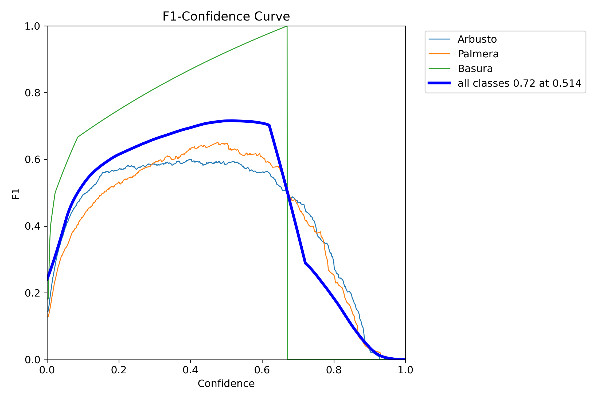
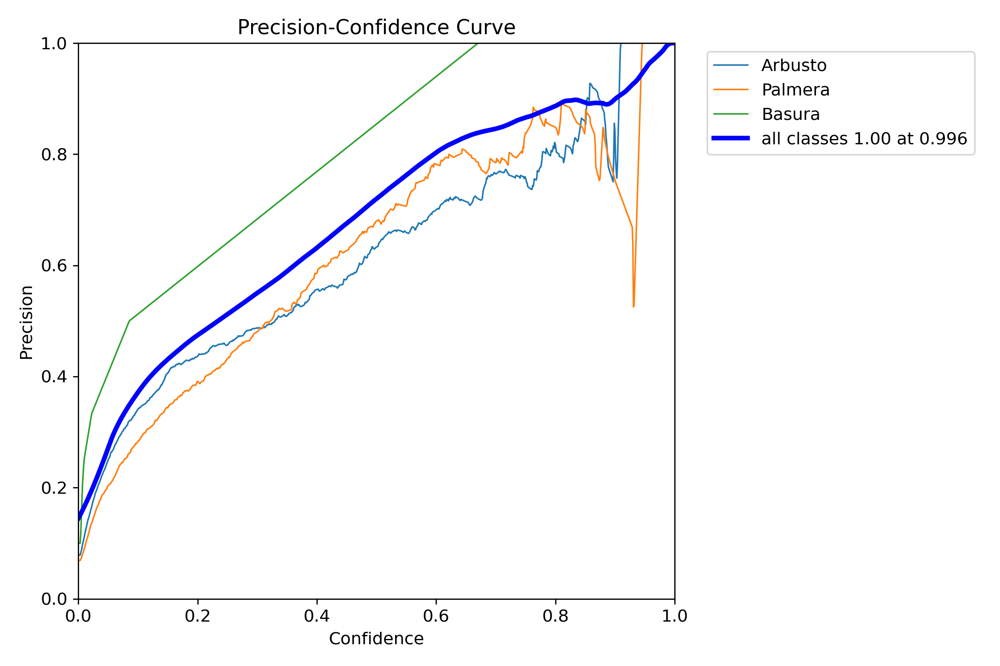
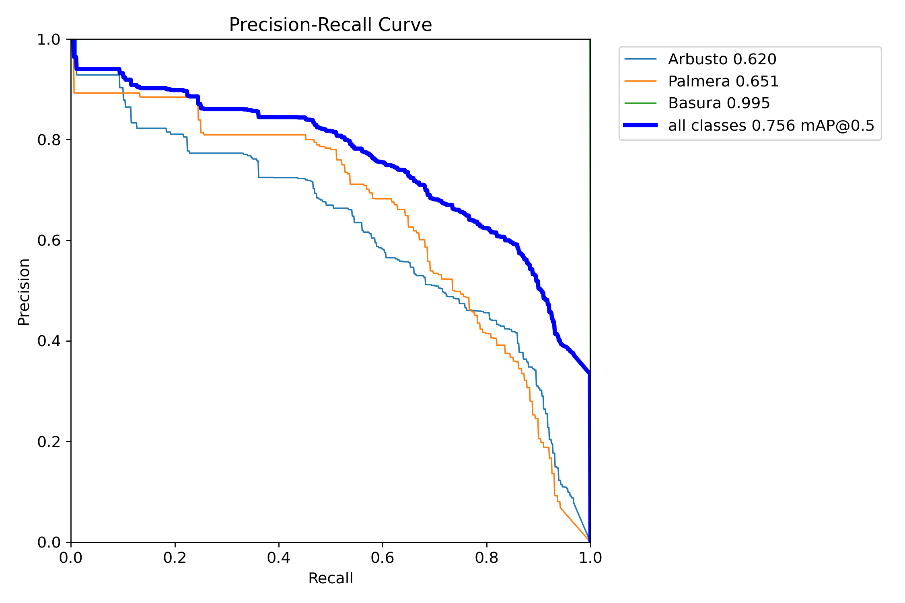
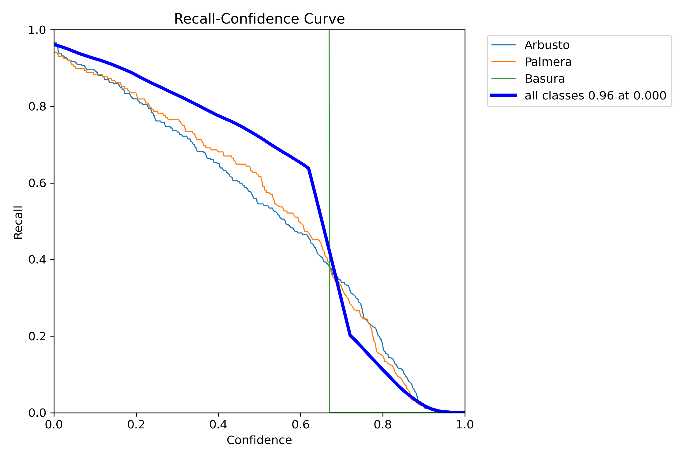
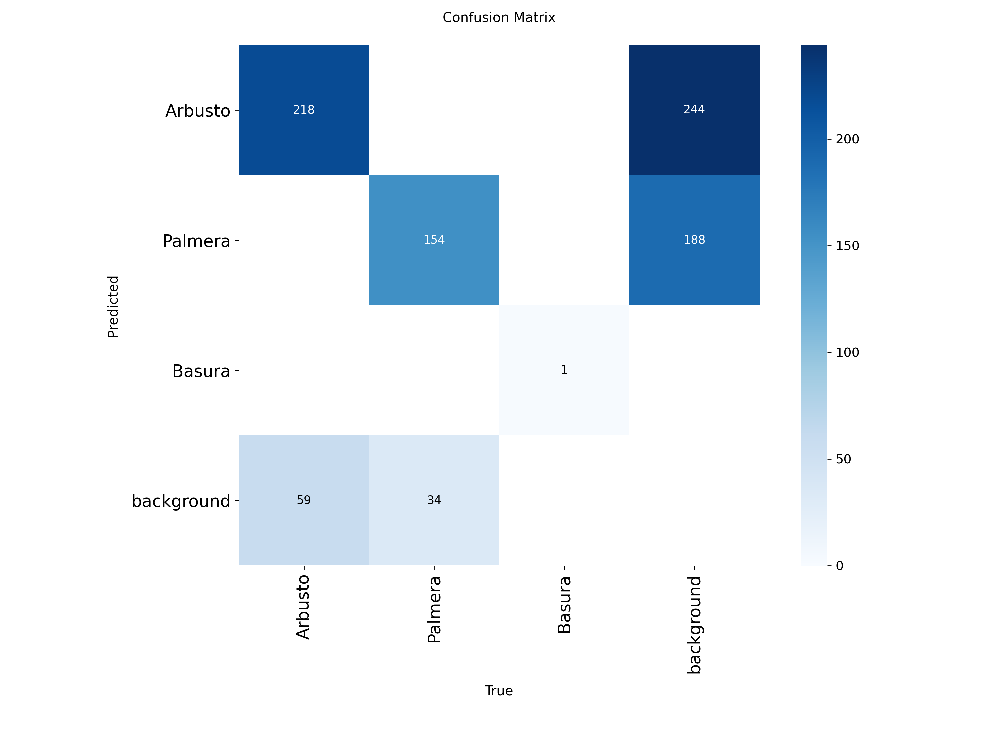
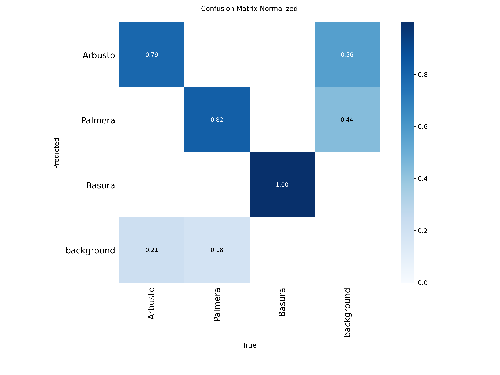
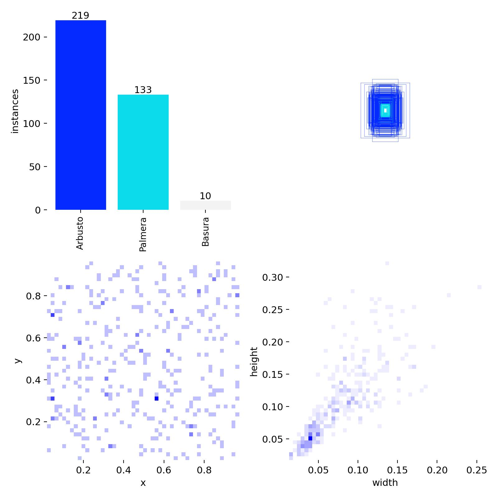
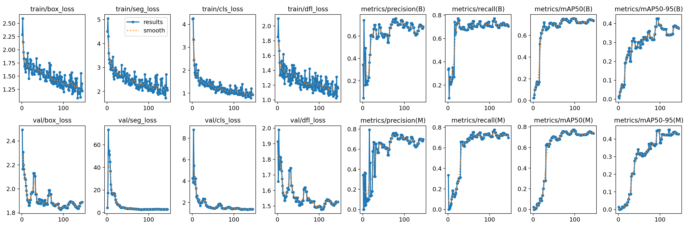
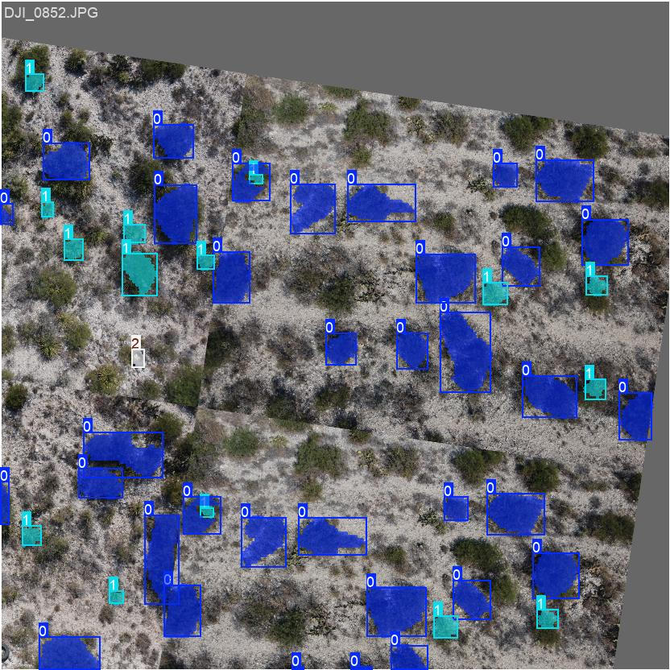

Guía del código para el entrenamiento de detección de objetos
Conteo de vegetación con Deep Learning
1 Introducción.
Google Colaboratory (Colab) es un entorno de programación en la nube que ofrece:
Acceso gratuito a GPUs y TPUs: Recursos computacionales potentes sin costo
Entorno preconfigurado: Todo listo para machine learning sin instalaciones complicadas
Almacenamiento integrado: Conexión directa con Google Drive
Colaboración en tiempo real: Múltiples usuarios pueden trabajar simultáneamente
Basado en Jupyter notebooks: Interfaz familiar para usuarios de Python
En resumen: Estamos trabajando en un entorno Colab que nos proporciona los recursos necesarios para ejecutar modelos avanzados de YOLO Segment, que nos permitirán realizar segmentación precisa de objetos en imágenes y videos.
1.1 ¿Qué es YOLO (You Only Look Once)?
YOLO es un algoritmo de detección de objetos en tiempo real que revolucionó el campo de la visión por computadora. A diferencia de métodos tradicionales que realizan múltiples pasadas sobre una imagen, YOLO aborda la detección como un problema de regresión única, permitiendo identificar y localizar objetos en una imagen con una sola pasada a través de la red neuronal. Las principales características de YOLO son:
Velocidad: Puede procesar imágenes en tiempo real (45+ FPS)
Eficiencia: Unifica la detección y clasificación en una sola red
Precisión: Logra buen equilibrio entre velocidad y exactitud
Versatilidad: Detecta múltiples categorías de objetos simultáneamente
1.2 ¿Qué es YOLO Segment?
YOLO Segment es una evolución especializada de YOLO que se enfoca en segmentación de instancias. Mientras YOLO tradicional dibuja cuadros delimitadores (bounding boxes) alrededor de los objetos, YOLO Segment va más allá:
Segmentación por máscaras: En lugar de rectángulos, crea máscaras pixel-perfect que delinean exactamente la forma del objeto
Precisión superior: Identifica los contornos exactos de cada objeto
Aplicaciones avanzadas: Ideal para tareas que requieren delineación precisa como medicina, análisis de imágenes satelitales, robótica, etc.
Dos variantes: YOLOv8-seg, YOLOv5-seg, etc.
2 Conectar con Google Drive
La siguiente línea de código importa el módulo drive que es exclusivo del entorno de Google Colab. Esta librería no existe en instalaciones locales de Python y contiene funciones específicas para interactuar con la infraestructura de Google, particularmente para integrar Google Drive con el entorno de ejecución temporal de Colab.
from google.colab import drive
drive.mount('/content/drive')En lugar de escribir la ruta directamente en el código, esta versión te la pregunta en el momento de ejecutar. El programa mostrará un cuadro de texto donde debes escribir la ruta de tu carpeta en Google Drive y presionar Enter.
ruta = input("Introduce la ruta de la carpeta: ")
!ls "{ruta}"La primera línea usa input() para pausar la ejecución y esperar a que escribas la ruta. Todo lo que escribas se guarda automáticamente en la variable ruta. La segunda línea ejecuta el comando ls de Linux, que lista todos los archivos y subcarpetas dentro de la ruta indicada. Las comillas dobles alrededor de {ruta} son necesarias para que el sistema tome exactamente lo que escribiste como parte del comando.
Ejemplo de lo que verás en pantalla y lo que debes escribir:
Introduce la ruta de la carpeta: /content/drive/MyDrive/mi_proyecto/dataQué se espera ver en la salida:
images labels data.yamlQué cambiar para usar con tus datos: Simplemente escribe la ruta correcta cuando el programa te lo pida. No es necesario modificar el código.
3 Convertir las etiquetas .json a Yolo-seg.
El siguiente script convierte anotaciones de LabelMe (archivos .json) al formato YOLO-Segmentation (.txt) necesario para entrenar modelos de segmentación. El código busca recursivamente todos los archivos .json en las carpetas de train y val, extrae los polígonos de las anotaciones, normaliza las coordenadas respecto al tamaño de la imagen y genera archivos .txt donde cada línea representa una instancia con su clase y puntos normalizados. Crea dos carpetas de salida (txt_train y txt_val) con las anotaciones convertidas.
El siguiente script convierte anotaciones de LabelMe (archivos .json) al formato YOLO-Segmentation (.txt) necesario para entrenar modelos de segmentación. Esta versión es completamente interactiva: en lugar de tener las rutas escritas en el código, el programa te las preguntará una por una al momento de ejecutar.
3.1 Configuración interactiva de rutas y clases
El primer bloque solicita al usuario la información básica del proyecto. La función input() detiene la ejecución y espera a que escribas el valor pedido:
import os, json, glob
# --- 1. CONFIGURACIÓN DE RUTAS (INTERACTIVO) ---
print("--- Configuración ---")
BASE = input("1. Pega la RUTA BASE del proyecto: ").strip()
OUT_TRAIN = input(f"2. Ruta salida TRAIN (Enter para '{BASE}/txt_train'): ").strip() or f"{BASE}/txt_train"
OUT_VAL = input(f"3. Ruta salida VAL (Enter para '{BASE}/txt_val'): ").strip() or f"{BASE}/txt_val"
TRAIN_JSON_GLOB = f"{BASE}/data/train/**/*.json"
VAL_JSON_GLOB = f"{BASE}/data/val/**/*.json"
CLASSES = ["Arbusto", "Palmera", "Basura"]
os.makedirs(OUT_TRAIN, exist_ok=True)
os.makedirs(OUT_VAL, exist_ok=True)
print(f"\nProcesando en:\n Base: {BASE}\n Salida Train: {OUT_TRAIN}\n Salida Val: {OUT_VAL}\n")BASE: Es la carpeta raíz de tu proyecto en Google Drive. Por ejemplo:/content/drive/MyDrive/mi_proyecto.OUT_TRAINyOUT_VAL: Las carpetas donde se guardarán los archivos .txt convertidos. Si presionas Enter sin escribir nada, el programa usará automáticamente una ruta sugerida construida a partir deBASE.CLASSES: La lista de nombres de las clases, exactamente como aparecen en tus archivos .json. Si tus clases tienen nombres diferentes (por ejemploPinooEncino), debes editar esta lista.os.makedirs(..., exist_ok=True): Crea las carpetas de salida si no existen. El parámetroexist_ok=Trueevita un error en caso de que la carpeta ya existiera.
Ejemplo de lo que verás en pantalla:
--- Configuración ---
1. Pega la RUTA BASE del proyecto: /content/drive/MyDrive/mi_proyecto
2. Ruta salida TRAIN (Enter para '/content/drive/MyDrive/mi_proyecto/txt_train'):
3. Ruta salida VAL (Enter para '/content/drive/MyDrive/mi_proyecto/txt_val'): 3.2 Función de conversión
A continuación se define la función convert_labelme_to_yoloseg(), que realiza el trabajo de leer cada archivo .json y transformarlo al formato que YOLO necesita:
def convert_labelme_to_yoloseg(json_paths, out_dir, classes):
not_found_labels = set()
created, skipped = 0, 0
for jp in json_paths:
try:
with open(jp, "r", encoding="utf-8") as f:
data = json.load(f)
except Exception as e:
print(f"⚠️ No pude leer {jp}: {e}")
skipped += 1
continue
if "imageHeight" not in data or "imageWidth" not in data:
skipped += 1
continue
h, w = data["imageHeight"], data["imageWidth"]
lines = []
for shape in data.get("shapes", []):
label = shape.get("label", "")
if label not in classes:
not_found_labels.add(label)
continue
pts = shape.get("points", [])
if len(pts) < 3:
continue
flat = []
for x, y in pts:
flat += [round(float(x)/w, 6), round(float(y)/h, 6)]
class_id = classes.index(label)
lines.append(str(class_id) + " " + " ".join(map(str, flat)))
out_txt = os.path.join(out_dir, os.path.basename(jp).replace(".json", ".txt"))
if lines:
with open(out_txt, "w", encoding="utf-8") as f:
f.write("\n".join(lines))
created += 1
else:
skipped += 1
print(f"✅ Convertidos: {created} | ⏭️ Omitidos: {skipped} | Salida: {out_dir}")
if not_found_labels:
print("⚠️ Etiquetas ignoradas:", sorted(not_found_labels))En programación, una función es un bloque de código que tiene un nombre y puede reutilizarse varias veces. Aquí definimos convert_labelme_to_yoloseg para llamarla dos veces: una para el conjunto de entrenamiento y otra para el de validación, sin tener que escribir el mismo proceso dos veces.
for jp in json_paths: Recorre la lista de archivos .json uno por uno.json.load(f): Lee el contenido del archivo .json y lo convierte en un diccionario de Python con el que podemos trabajar.data["imageHeight"]ydata["imageWidth"]: Obtiene las dimensiones de la imagen original, necesarias para normalizar las coordenadas.- Normalización: YOLO no trabaja con coordenadas absolutas en píxeles, sino con valores entre 0 y 1. Por eso dividimos cada coordenada
xentre el anchowy cadayentre el altoh. class_id = classes.index(label): Convierte el nombre de la clase (por ejemplo"Arbusto") a su número correspondiente (0, 1, 2…), que es lo que YOLO necesita.- Si un archivo .json no tiene polígonos válidos, se cuenta como
skipped(omitido).
3.3 Ejecución y verificación
El bloque final ejecuta la función para ambos conjuntos y muestra los resultados:
train_jsons = glob.glob(TRAIN_JSON_GLOB, recursive=True)
val_jsons = glob.glob(VAL_JSON_GLOB, recursive=True)
print("Archivos JSON TRAIN encontrados:", len(train_jsons))
print("Archivos JSON VAL encontrados:", len(val_jsons))
convert_labelme_to_yoloseg(train_jsons, OUT_TRAIN, CLASSES)
convert_labelme_to_yoloseg(val_jsons, OUT_VAL, CLASSES)
print("\n--- Verificación rápida (primeros archivos) ---")
print(f"Carpeta: {OUT_TRAIN}")
!ls -l "{OUT_TRAIN}" | head
print(f"\nCarpeta: {OUT_VAL}")
!ls -l "{OUT_VAL}" | headglob.glob(..., recursive=True): Busca todos los archivos .json dentro de la carpeta indicada, incluyendo subcarpetas. El**en la ruta actúa como comodín que entra en cualquier subdirectorio.- Al final,
!ls -l ... | headlista los primeros 10 archivos convertidos en cada carpeta de salida para que puedas verificar que el proceso funcionó correctamente.
3.4 Verifica que se crearon los .txt
Los siguientes dos bloques verifican que los archivos .txt se hayan generado correctamente en las carpetas de entrenamiento y validación. Ahora también son interactivos: el programa te pregunta la ruta de cada carpeta.
Conjunto de entrenamiento
Ruta_txt_train = input("Introduce la ruta de la carpeta de las etiquetas de train: ")
!ls "{Ruta_txt_train}" | headConjunto de validación
Ruta_txt_val = input("Introduce la ruta de la carpeta de las etiquetas de val: ")
!ls "{Ruta_txt_val}" | headEl comando | head al final le indica al sistema que muestre únicamente los primeros 10 archivos del listado. Esto es útil cuando una carpeta tiene cientos de archivos y no quieres ver toda la lista.
Qué se espera obtener en la salida:
Se espera ver una lista de archivos .txt con los mismos nombres que tus imágenes originales:
DJI_0820.txt DJI_0821.txt DJI_0822.txt DJI_0823.txt DJI_0824.txt DJI_0825.txtNota: Las carpetas que debes verificar son las que generaste en el paso anterior (txt_train y txt_val), no las carpetas originales del dataset.
4 Instalar librerías de Yolo
El código instala la librería Ultralytics (que contiene YOLOv8). Luego from ultralytics import YOLO importa la clase principal del modelo YOLO, que permite cargar, entrenar y usar modelos preentrenados de YOLOv8 para detección, segmentación o clasificación.
!pip install ultralytics --quiet
from ultralytics import YOLO4.1 Confirmar estructura del Data Yaml.
El archivo data.yaml es fundamental para YOLO ya que contiene la configuración del dataset: las rutas a las imágenes y las clases que debe aprender a detectar. El siguiente código te pide la ruta del archivo y muestra su contenido en pantalla:
Ruta_yaml = input("Introduce la ruta de acceso al archivo YAML: ")
!cat "{Ruta_yaml}"El comando !cat (abreviatura de “concatenate”) simplemente imprime el contenido de un archivo de texto en la pantalla. Al ejecutar esta celda, el programa te pedirá que escribas la ruta completa al archivo data.yaml de tu proyecto.
Ejemplo de lo que debes escribir cuando el programa te pregunte:
Introduce la ruta de acceso al archivo YAML: /content/drive/MyDrive/mi_proyecto/data/data.yamlQué se espera obtener en la salida:
Se espera ver la estructura YAML con
path: /content/drive/MyDrive/vegeta/data
train: train/images
val: val/images
test: test/images
nc: 3
names: ['Arbusto', 'Palmera', 'Basura']Donde:
path: Ruta base del datasettrain/val/test: Subrutas de imágenesnc: Número de clasesnames: Lista de nombres de clases
Qué cambiar para usar con tus datos:
Solo necesitas ajustar la ruta si tu proyecto no se llama “vegeta”
El archivo data.yaml debe existir y contener la configuración correcta de tu dataset
Verifica que
namescoincida exactamente con las clases que usaste en las anotaciones
5 Entrenamiento del modelo YOLO
En este módulo aprenderás a entrenar dos tipos de modelos YOLO: uno de detección (que dibuja rectángulos alrededor de los objetos) y uno de segmentación (que dibuja máscaras pixel a pixel siguiendo el contorno exacto del objeto). Ambas versiones son interactivas y te pedirán los parámetros más importantes antes de comenzar.
5.1 Entrenamiento con YOLO Detección
Este primer script entrena un modelo YOLO para detección de objetos, es decir, el modelo aprenderá a localizar los objetos dibujando rectángulos delimitadores (bounding boxes) alrededor de ellos. Este modo es más rápido de entrenar y puede ser un buen punto de partida antes de pasar a la segmentación.
5.1.1 Configuración interactiva
Al ejecutar la celda, el programa te hará cuatro preguntas: la ruta del archivo de configuración .yaml de tu dataset, el número de épocas, el tamaño de imagen y el tamaño del batch. Para cada pregunta puedes presionar Enter y usar el valor por defecto sugerido:
from ultralytics import YOLO
def_yaml = "/content/drive/MyDrive/vegeta/data/data.yaml"
data_path = input(f"Ruta del archivo .yaml (Enter para usar '{def_yaml}'): ").strip() or def_yaml
epochs_user = input("Número de épocas (Enter para 200): ").strip()
imgsz_user = input("Tamaño de imagen (Enter para 832): ").strip()
batch_user = input("Batch size (Enter para 8): ").strip()
epochs = int(epochs_user) if epochs_user else 200
imgsz = int(imgsz_user) if imgsz_user else 832
batch = int(batch_user) if batch_user else 8
print(f"\n🚀 Iniciando entrenamiento...\nYAML: {data_path}\nEpochs: {epochs} | ImgSz: {imgsz} | Batch: {batch}")int(epochs_user) if epochs_user else 200: Convierte la respuesta del usuario a número entero, pero solo si el usuario escribió algo. Si presionó Enter sin escribir nada, la variable queda vacía y el programa usa 200 por defecto. Este patrón se repite paraimgszybatch.- El mensaje final con
print()confirma los parámetros que se usarán antes de comenzar, útil para verificar que todo está correcto.
5.1.2 Carga del modelo y entrenamiento
model = YOLO("yolo26s.pt")
results = model.train(
data=data_path,
epochs=epochs,
imgsz=imgsz,
batch=batch,
patience=50,
optimizer="AdamW",
lr0=0.001,
workers=2,
fliplr=0.5,
flipud=0.15,
degrees=12,
translate=0.10,
scale=0.50,
hsv_h=0.015,
hsv_s=0.7,
hsv_v=0.4,
mosaic=0.8,
mixup=0.10
)YOLO("yolo26s.pt"): Carga el modelo base de detección. Si el archivo no existe en Colab, se descargará automáticamente desde internet.model.train(...): Inicia el entrenamiento con los parámetros que diste en el paso anterior. Los parámetros de aumentación de datos son fijos y están optimizados para imágenes aéreas. En la siguiente sección se explica cada uno en detalle.
Qué cambiar para usar con tus datos: Solo necesitas responder correctamente las preguntas interactivas. Si tus clases son diferentes, lo único que cambia es el data.yaml que apuntas.
5.2 Entrenamiento con YOLO Segmentación
Este código carga un modelo YOLOv8 preentrenado para segmentación y comienza su entrenamiento personalizado. La diferencia con el modo de detección es que además de localizar objetos, aprende a dibujar sus contornos exactos pixel a pixel. La configuración está optimizada para imágenes aéreas con parámetros específicos de aumentación de datos.
Al igual que el entrenamiento de detección, esta versión también es interactiva. Al ejecutar la celda el programa te pedirá los parámetros principales:
from ultralytics import YOLO
def_yaml = "/content/drive/MyDrive/vegeta/data/data.yaml"
data_path = input(f"Ruta del archivo .yaml (Enter para usar '{def_yaml}'): ").strip() or def_yaml
epochs_user = input("Número de épocas (Enter para 200): ").strip()
imgsz_user = input("Tamaño de imagen (Enter para 832): ").strip()
batch_user = input("Batch size (Enter para 8): ").strip()
epochs = int(epochs_user) if epochs_user else 200
imgsz = int(imgsz_user) if imgsz_user else 832
batch = int(batch_user) if batch_user else 8
print(f"\n🚀 Iniciando entrenamiento...\nYAML: {data_path}\nEpochs: {epochs} | ImgSz: {imgsz} | Batch: {batch}")
model = YOLO("yolo26m-seg.pt")
results = model.train(
data=data_path,
epochs=epochs,
imgsz=imgsz,
batch=batch,
patience=50,
optimizer="AdamW",
lr0=0.001,
workers=2,
fliplr=0.5,
flipud=0.15,
degrees=12,
translate=0.10,
scale=0.50,
hsv_h=0.015,
hsv_s=0.7,
hsv_v=0.4,
mosaic=0.8,
mixup=0.10
)YOLO("yolo26m-seg.pt"): Carga el modelo base de segmentación. La letra m indica que es la versión medium (mediana), que ofrece mayor precisión que la versión pequeña (s) a cambio de requerir un poco más de memoria GPU y tiempo de entrenamiento.
Explicación de los parámetros de entrenamiento en YOLO:
epochs=200: El modelo procesará todo el dataset 200 veces completas. Con pocos datos, más épocas permiten un aprendizaje más profundo.patience=50: Si las métricas no mejoran durante 50 épocas consecutivas, el entrenamiento se detiene automáticamente para evitar sobre-entrenamiento.imgsz=832: Las imágenes se redimensionan a 832x832 píxeles. Mayor tamaño mejora detección de objetos pequeños pero requiere más GPU.batch=8: Procesa 8 imágenes simultáneamente antes de actualizar los pesos. Reduce este número si aparece error de memoria GPU.optimizer="AdamW": Usa el algoritmo AdamW para ajustar los pesos del modelo, que es eficiente y maneja bien el sobre-entrenamiento.lr0=0.001: Tasa de aprendizaje inicial de 0.001. Un valor conservador evita que el modelo diverja durante el aprendizaje.workers=2: Usa 2 procesos paralelos para cargar datos. Nota: en Colab, mantenerlo bajo evita cuellos de botella.
El data augmentation es una técnica que crea nuevas variaciones de tus imágenes de entrenamiento aplicando transformaciones aleatorias como rotaciones, volteos, cambios de color y escala. Esto se hace para que el modelo vea más diversidad durante el entrenamiento y aprenda a reconocer objetos en diferentes condiciones, evitando que memorice las imágenes originales.
En el código para el entrenamiento de YOLO, cada parámetro controla una transformación específica:
fliplr=0.5: Voltea horizontalmente el 50% de imágenes (útil para objetos simétricos)flipud=0.15: Voltea verticalmente el 15% (común en vistas aéreas)degrees=12: Rota imágenes hasta ±12 gradostranslate=0.10: Desplaza imágenes hasta 10% de su tamañoscale=0.50: Aplica zoom desde 50% hasta 150% del tamaño originalhsv_h/s/v: Modifica tono, saturación y brillo para simular diferentes condiciones de iluminaciónmosaic=0.8: Combina 4 imágenes en una (80% de probabilidad)mixup=0.10: Mezcla dos imágenes superpuestas (10% de probabilidad)
Al igual que el entrenamiento de detección, esta versión también es interactiva. Al ejecutar la celda el programa te pedirá los parámetros principales:
from ultralytics import YOLO
def_yaml = "/content/drive/MyDrive/vegeta/data/data.yaml"
data_path = input(f"Ruta del archivo .yaml (Enter para usar '{def_yaml}'): ").strip() or def_yaml
epochs_user = input("Número de épocas (Enter para 200): ").strip()
imgsz_user = input("Tamaño de imagen (Enter para 832): ").strip()
batch_user = input("Batch size (Enter para 8): ").strip()
epochs = int(epochs_user) if epochs_user else 200
imgsz = int(imgsz_user) if imgsz_user else 832
batch = int(batch_user) if batch_user else 8
print(f"\n🚀 Iniciando entrenamiento...\nYAML: {data_path}\nEpochs: {epochs} | ImgSz: {imgsz} | Batch: {batch}")
model = YOLO("yolo26m-seg.pt")
results = model.train(
data=data_path,
epochs=epochs,
imgsz=imgsz,
batch=batch,
patience=50,
optimizer="AdamW",
lr0=0.001,
workers=2,
fliplr=0.5,
flipud=0.15,
degrees=12,
translate=0.10,
scale=0.50,
hsv_h=0.015,
hsv_s=0.7,
hsv_v=0.4,
mosaic=0.8,
mixup=0.10
)YOLO("yolo26m-seg.pt"): Carga el modelo base de segmentación. La letra m indica que es la versión medium (mediana), que ofrece mayor precisión que la versión pequeña (s) a cambio de requerir un poco más de memoria GPU y tiempo de entrenamiento.
Ejemplo de salida
Downloading https://github.com/ultralytics/assets/releases/download/v8.3.0/yolov8s-seg.pt to 'yolov8s-seg.pt': 100% ━━━━━━━━━━━━ 22.8MB 103.5MB/s 0.2s
Ultralytics 8.3.218 🚀 Python-3.12.12 torch-2.8.0+cu126 CUDA:0 (Tesla T4, 15095MiB)
from n params module arguments
0 -1 1 928 ultralytics.nn.modules.conv.Conv [3, 32, 3, 2]
1 -1 1 18560 ultralytics.nn.modules.conv.Conv [32, 64, 3, 2]
2 -1 1 29056 ultralytics.nn.modules.block.C2f [64, 64, 1, True]
3 -1 1 73984 ultralytics.nn.modules.conv.Conv [64, 128, 3, 2]
4 -1 2 197632 ultralytics.nn.modules.block.C2f [128, 128, 2, True]
5 -1 1 295424 ultralytics.nn.modules.conv.Conv [128, 256, 3, 2]
6 -1 2 788480 ultralytics.nn.modules.block.C2f [256, 256, 2, True]
7 -1 1 1180672 ultralytics.nn.modules.conv.Conv [256, 512, 3, 2]
8 -1 1 1838080 ultralytics.nn.modules.block.C2f [512, 512, 1, True]
9 -1 1 656896 ultralytics.nn.modules.block.SPPF [512, 512, 5]
10 -1 1 0 torch.nn.modules.upsampling.Upsample [None, 2, 'nearest']
11 [-1, 6] 1 0 ultralytics.nn.modules.conv.Concat [1]
12 -1 1 591360 ultralytics.nn.modules.block.C2f [768, 256, 1]
13 -1 1 0 torch.nn.modules.upsampling.Upsample [None, 2, 'nearest']
14 [-1, 4] 1 0 ultralytics.nn.modules.conv.Concat [1]
15 -1 1 148224 ultralytics.nn.modules.block.C2f [384, 128, 1]
16 -1 1 147712 ultralytics.nn.modules.conv.Conv [128, 128, 3, 2]
17 [-1, 12] 1 0 ultralytics.nn.modules.conv.Concat [1]
18 -1 1 493056 ultralytics.nn.modules.block.C2f [384, 256, 1]
19 -1 1 590336 ultralytics.nn.modules.conv.Conv [256, 256, 3, 2]
20 [-1, 9] 1 0 ultralytics.nn.modules.conv.Concat [1]
21 -1 1 1969152 ultralytics.nn.modules.block.C2f [768, 512, 1]
22 [15, 18, 21] 1 2771705 ultralytics.nn.modules.head.Segment [3, 32, 128, [128, 256, 512]]
YOLOv8s-seg summary: 151 layers, 11,791,257 parameters, 11,791,241 gradients, 40.2 GFLOPs
Transferred 411/417 items from pretrained weights
Freezing layer 'model.22.dfl.conv.weight'
AMP: running Automatic Mixed Precision (AMP) checks...
Downloading https://github.com/ultralytics/assets/releases/download/v8.3.0/yolo11n.pt to 'yolo11n.pt': 100% ━━━━━━━━━━━━ 5.4MB 100.2MB/s 0.1s
AMP: checks passed ✅
train: Fast image access ✅ (ping: 0.4±0.1 ms, read: 6.8±1.6 MB/s, size: 5325.0 KB)
train: Scanning /content/drive/MyDrive/vegeta/data/train/labels.cache... 17 images, 0 backgrounds, 0 corrupt: 100% ━━━━━━━━━━━━ 17/17 23.6Kit/s 0.0s
albumentations: Blur(p=0.01, blur_limit=(3, 7)), MedianBlur(p=0.01, blur_limit=(3, 7)), ToGray(p=0.01, method='weighted_average', num_output_channels=3), CLAHE(p=0.01, clip_limit=(1.0, 4.0), tile_grid_size=(8, 8))
val: Fast image access ✅ (ping: 1.4±1.2 ms, read: 7.2±1.5 MB/s, size: 5236.3 KB)
val: Scanning /content/drive/MyDrive/vegeta/data/val/labels.cache... 20 images, 0 backgrounds, 0 corrupt: 100% ━━━━━━━━━━━━ 20/20 11.1Kit/s 0.0s
Plotting labels to /content/runs/segment/train/labels.jpg...
optimizer: AdamW(lr=0.001, momentum=0.937) with parameter groups 66 weight(decay=0.0), 77 weight(decay=0.0005), 76 bias(decay=0.0)
Image sizes 832 train, 832 val
Using 2 dataloader workers
Logging results to /content/runs/segment/train
Starting training for 200 epochs...
Epoch GPU_mem box_loss seg_loss cls_loss dfl_loss Instances Size
1/200 4.9G 2.285 4.507 4.244 1.854 51 832: 100% ━━━━━━━━━━━━ 3/3 0.4it/s 6.8s
Class Images Instances Box(P R mAP50 mAP50-95) Mask(P R mAP50 mAP50-95): 100% ━━━━━━━━━━━━ 2/2 1.1it/s 1.8s
all 20 466 0.344 0.333 0.0223 0.0133 0.344 0.333 0.0225 0.0134
Epoch GPU_mem box_loss seg_loss cls_loss dfl_loss Instances Size
2/200 5.38G 2.594 5.05 4.261 2.103 26 832: 100% ━━━━━━━━━━━━ 3/3 1.6it/s 1.9s
Class Images Instances Box(P R mAP50 mAP50-95) Mask(P R mAP50 mAP50-95): 100% ━━━━━━━━━━━━ 2/2 0.8it/s 2.6s
all 20 466 0.0443 0.344 0.025 0.00551 0 0 0 0
Epoch GPU_mem box_loss seg_loss cls_loss dfl_loss Instances Size
3/200 5.45G 2.143 4.309 3.329 1.8 22 832: 100% ━━━━━━━━━━━━ 3/3 2.6it/s 1.2s
Class Images Instances Box(P R mAP50 mAP50-95) Mask(P R mAP50 mAP50-95): 100% ━━━━━━━━━━━━ 2/2 0.9it/s 2.1s
all 20 466 0.742 0.089 0.0532 0.0192 5.77e-05 0.0012 2.89e-05 1.74e-05
Epoch GPU_mem box_loss seg_loss cls_loss dfl_loss Instances Size
4/200 5.46G 1.956 3.604 2.438 1.665 23 832: 100% ━━━━━━━━━━━━ 3/3 2.4it/s 1.2s
Class Images Instances Box(P R mAP50 mAP50-95) Mask(P R mAP50 mAP50-95): 100% ━━━━━━━━━━━━ 2/2 1.0it/s 2.0s
all 20 466 0.438 0.221 0.0956 0.0369 0.338 0.00842 0.00162 0.000485
Significado de cada columna:
Epoch 42/200: Va en la época 42 de 200 totales
GPU_mem 6.68G: Memoria GPU usada (6.68 GB)
box_loss 1.627: Error en detección de cajas (debe bajar)
seg_loss 2.633: Error en segmentación (debe bajar)
cls_loss 1.573: Error en clasificación (debe bajar)
dfl_loss 1.43: Error de distribución focal (debe bajar)
Instances 10: Objetos detectados en el batch
Size 832: Tamaño de imagen
100%: Progreso del epoch actual
Cómo saber si el modelo va aprendiendo:
Las 4 pérdidas (box_loss, seg_loss, cls_loss, dfl_loss) bajan progresivamente
Las pérdidas de entrenamiento y validación convergen
El mAP50 y mAP50-95 aumentan en las gráficas
Las predicciones en imágenes de validación mejoran
Señales de un entrenamiento no adecuado:
Las pérdidas se estancan o aumentan
Overfitting: pérdidas de entrenamiento bajan pero las de validación suben
Pérdidas muy altas que no bajan después de varias épocas
mAP se mantiene en cero o muy bajo
Qué cambiar para usar con tus datos:
data: Cambia la ruta del data.yaml si tu proyecto no se llama “vegeta”imgsz: Ajusta según tu GPU (640 para T4, 832 para V100, 1024 para A100)batch: Reduce si aparece error de memoria GPU (8→4→2)epochs: Modifica según el tamaño de tu datasetParámetros de aumentación: Ajusta
flipud,degrees,scalesegún el tipo de imágenes que tengas
6 Exportar el modelo a Google Drive.
El siguiente código copia todos los resultados del entrenamiento YOLO desde el directorio temporal de Colab a tu Google Drive permanente. Usa shutil.copytree() para duplicar toda la carpeta de resultados incluyendo modelos, gráficas, métricas y configuraciones.
import shutil
import os
default_src = "/content/runs/segment/train"
default_dst = "/content/drive/MyDrive/vegeta/train2_results"
src = input(f"Ruta origen del modelo entrenado (Enter para '{default_src}'): ").strip() or default_src
dst = input(f"Ruta para exportar el modelo (Enter para '{default_dst}'): ").strip() or default_dst
if os.path.exists(src):
print(f"\n📂 Copiando datos...\n De: {src}\n A: {dst}")
try:
shutil.copytree(src, dst, dirs_exist_ok=True)
print(f"✅ ¡Éxito! Copia terminada.")
except Exception as e:
print(f"❌ Error al copiar: {e}")
else:
print(f"\n❌ Error: La ruta de origen no existe: {src}")
print("Consejo: Verifica si la carpeta se llama 'train', 'train2', 'train3', etc.")En tu Google Drive aparecerá una nueva carpeta “train2_results” con:
6.1 Gráficos del entrenamiento
6.1.1 Curva F1
La gráfica BoxF1_curve.png es una curva que muestra la relación entre la métrica F1-Score y los diferentes umbrales de confianza para las detecciones de cajas del modelo YOLO. Esta gráfica se genera automáticamente durante el proceso de validación del entrenamiento y representa el comportamiento del modelo across todos los rangos posibles de confianza, desde valores muy bajos hasta muy altos.

Esta curva sirve principalmente para identificar el punto óptimo de operación del modelo, específicamente para determinar qué umbral de confianza maximiza el balance entre precision y recall. Es una herramienta fundamental para ajustar hiperparámetros antes de desplegar el modelo a producción, ya que permite seleccionar el threshold que entregará el mejor desempeño general en la detección de objetos.
¿QUÉ INDICA?
El valor “all classes 0.72 at 0.514” indica que el modelo alcanza su máximo F1-Score de 0.72 cuando se configura con un umbral de confianza de 0.514. Esto significa que a este nivel de confianza, el modelo encuentra el mejor equilibrio entre detectar la mayor cantidad de objetos verdaderos (recall alto) y minimizar las detecciones falsas (precision alta). Cada línea de color representa el comportamiento de una clase específica, mostrando cómo varía su F1-Score conforme cambia el umbral de confianza.
¿Cómo se interpretan estos resultados?
Un F1-Score de 0.72 es considerado bueno para un modelo en etapa de entrenamiento, especialmente en proyectos de segmentación con múltiples clases. El umbral óptimo de 0.514 sugiere que el modelo tiene una confianza moderada en sus predicciones, lo que es saludable.
Cuando las curvas de las diferentes clases muestran patrones similares y alcanzan valores de F1-Score comparables, esto indica que el modelo está aprendiendo de manera balanceada “across” todas las categorías.
Si alguna clase específica muestra un F1-Score significativamente más bajo que las demás, esto podría indicar la necesidad de recopilar más datos de entrenamiento para esa clase en particular o ajustar los parámetros de aumentación de datos.
6.1.2 Curva de Precisión-Confianza
La gráfica BoxP_curve.png es la curva de Precisión-Confianza que muestra cómo varía la precisión de las detecciones del modelo según cambia el umbral de confianza. Esta curva se genera durante la validación y representa el porcentaje de detecciones correctas frente a todas las detecciones realizadas por el modelo para cada nivel de confianza posible.

curva sirve para entender la relación entre la confianza del modelo y la precisión de sus predicciones. Es particularmente útil para identificar a qué nivel de confianza el modelo comienza a ser confiable y para detectar si existe sobreconfianza en predicciones incorrectas. Ayuda a establecer umbrales de confianza que aseguren alta precisión en las detecciones, lo que es crucial para aplicaciones donde los falsos positivos son costosos.
El valor “all classes 1.00 at 0.996” indica que el modelo alcanza una precisión perfecta del 100% cuando se usa un umbral de confianza muy alto de 0.996. Esto significa que cuando el modelo está extremadamente seguro de sus predicciones (confianza > 0.996), prácticamente nunca se equivoca.
Sin embargo, esta alta precisión viene a costa de un recall más bajo, ya que muchas detecciones válidas con confianza intermedia serían descartadas. Las líneas individuales muestran cómo se comporta la precisión para cada clase específica a diferentes niveles de confianza.
¿Cómo se interpretan estos resultados?
Una precisión del 100% en umbrales altos es una señal excelente que indica que el modelo es muy confiable cuando expresa alta seguridad en sus predicciones. Sin embargo, el umbral de 0.996 es extremadamente alto para uso práctico, ya que filtraría la mayoría de las detecciones. En la práctica, se debe buscar un balance entre precisión y recall, generalmente usando el umbral óptimo identificado en la curva F1 (0.514 en tu caso anterior). Si alguna clase muestra una curva de precisión significativamente más baja que las demás, esto podría indicar que el modelo confunde esa clase con otras o que necesita más ejemplos de entrenamiento para aprender sus características distintivas de manera confiable.
6.1.3 Curva Precision-Recall
Esta curva ilustra el trade-off o equilibrio entre la capacidad del modelo para detectar objetos correctamente (precision) y su capacidad para encontrar todos los objetos presentes en las imágenes (recall). Cada punto en la curva representa una combinación diferente de precision y recall obtenida al variar el umbral de confianza.

Esta curva sirve para evaluar el desempeño general del modelo independientemente del umbral de confianza seleccionado. Es especialmente útil para comparar modelos entre sí y para entender el comportamiento del modelo en escenarios donde el balance entre falsos positivos y falsos negativos es crítico. El área bajo esta curva (mAP) proporciona una métrica única y robusta que resume el desempeño del modelo across todos los posibles umbrales de operación.
El valor “all classes 0.756 mAP@0.5” indica que el modelo tiene un Mean Average Precision de 0.756 cuando se usa un IoU threshold de 0.5. Los valores individuales para cada clase (Arbusto 0.620, Palmera 0.651, Basura 0.995) muestran el AP para cada categoría específica.
La clase “Basura” tiene un desempeño excepcionalmente alto (0.995), mientras que “Arbusto” y “Palmera” tienen valores buenos pero con margen de mejora. La forma de las curvas también es importante: curvas que se mantienen altas y cerca de la esquina superior derecha indican mejor desempeño.
Un mAP@0.5 de 0.756 es considerado muy bueno para un modelo en entrenamiento, indicando que el modelo está aprendiendo efectivamente. La alta performance en la clase “Basura” (0.995) sugiere que el modelo la reconoce casi perfectamente, mientras que las clases “Arbusto” y “Palmera” podrían beneficiarse de más datos de entrenamiento o ajustes en la aumentación de datos.
Todas las clases superen el 0.60 lo que indica que el modelo tiene una base sólida y está bien balanceado en términos de capacidad de detección “across” diferentes categorías de objetos
6.1.4 Curva Recall
La gráfica representa la curva Recall–Confidence, la cual muestra cómo cambia el recall (sensibilidad) del modelo a medida que se modifica el umbral de confianza (confidence threshold) que determina qué detecciones son consideradas válidas. En esta gráfica, el eje X representa el umbral de confianza (de 0 a 1), mientras que el eje Y representa el recall, es decir, la proporción de objetos verdaderos que el modelo logró detectar correctamente.

Esta gráfica sirve para analizar la sensibilidad del modelo frente al umbral de confianza y evaluar su capacidad para detectar la mayor cantidad posible de objetos verdaderos sin importar si estos fueron detectados con baja o alta confianza.
Es una herramienta fundamental para decidir qué umbral de confianza se debe utilizar en la etapa de inferencia.
En contextos donde se prefiere no perder objetos (por ejemplo, detección ecológica de individuos o conteo de plantas), un valor bajo de umbral de confianza permitirá mantener un recall alto. Por otro lado, si se busca evitar falsos positivos, se recomienda un umbral más alto, aunque esto reduzca el recall.
En la gráfica, cada línea muestra cómo disminuye el recall a medida que se incrementa la confianza exigida por el modelo.
Por ejemplo, la línea “all classes 0.96 at 0.000” indica que, al usar un umbral de confianza cercano a 0, el modelo alcanza un recall global del 96 %, lo cual significa que detecta casi todos los objetos presentes en las imágenes.
Sin embargo, conforme se aumenta el umbral (hacia la derecha del eje X), el recall disminuye de forma progresiva, ya que el modelo se vuelve más estricto y descarta predicciones menos seguras.
Las diferencias entre las curvas de cada clase también son relevantes: si una clase (por ejemplo, Palmera) cae más rápido que otra (Arbusto), esto indica que el modelo tiene menos confianza promedio en las detecciones de esa clase, lo que puede deberse a menor cantidad de datos o mayor variabilidad visual.
En la gráfica, la línea gruesa azul muestra un recall alto (≈0.96) con un umbral bajo, lo que significa que el modelo es muy sensible y logra detectar la mayoría de los objetos, aunque con riesgo de incluir algunos falsos positivos.
Las clases Arbusto y Palmera presentan curvas similares, pero con una ligera caída más pronunciada, lo que indica que el modelo pierde detecciones más rápido cuando se exige mayor confianza, sugiriendo que estas clases podrían beneficiarse de más ejemplos o de un mejor equilibrio en el entrenamiento.
En términos prácticos, si tu objetivo es aplicar el modelo sobre ortomosaicos para conteo o clasificación ecológica, se recomienda mantener el umbral de confianza bajo (entre 0.15 y 0.30) para conservar un recall elevado y posteriormente filtrar las detecciones con otros criterios (como tamaño, área o forma).
6.1.5 Matriz de confusión
La matriz de confusión es una tabla que muestra el desempeño del modelo de clasificación al comparar las predicciones con las etiquetas verdaderas. En el contexto de YOLO para segmentación, esta matriz representa cómo el modelo está clasificando los objetos que detecta, mostrando tanto los aciertos como los errores de clasificación entre las diferentes clases.

La matriz de confusión sirve para identificar patrones específicos de error en el modelo. Revela qué clases se confunden entre sí, si el modelo está prediciendo falsos positivos (objetos que no existen) o falsos negativos (objetos que no detecta), y proporciona insights concretos sobre qué aspectos del modelo necesitan mejora. Es especialmente útil para entender problemas específicos de clasificación entre clases visualmente similares.
En la matriz podemos observar que la clase “Basura” tiene un excelente desempeño con 244 detecciones correctas y solo 1 error, lo que indica que el modelo la reconoce casi perfectamente. La clase “Arbusto” muestra 218 aciertos pero también 34 confusiones, probablemente con otras clases. La clase “Palmera” tiene 154 aciertos y no muestra confusiones con otras clases, pero el valor de “background” (188) sugiere que hay detecciones falsas donde el modelo está encontrando objetos que no existen. Los valores en la diagonal principal representan las clasificaciones correctas, mientras que los valores fuera de la diagonal indican confusiones entre clases.
El modelo muestra un buen desempeño general con una clara fortaleza en detectar “Basura”. Las confusiones de “Arbusto” podrían indicar que esta clase comparte características visuales con otras o que necesita más ejemplos de entrenamiento variados.
El alto número en “background” sugiere que el modelo podría estar siendo demasiado sensible, detectando objetos donde no los hay, lo que podría mejorarse ajustando el umbral de confianza o añadiendo más ejemplos de fondo en el entrenamiento. La ausencia de confusiones entre “Palmera” y otras clases indica que el modelo ha aprendido bien sus características distintivas.
6.1.6 Matriz de confusión normalizada
Esta matriz sirve para comparar el desempeño del modelo “across” diferentes clases de manera más justa, independientemente del número de ejemplos que tenga cada clase en el dataset de validación. Facilita identificar patrones de error de forma más clara, ya que normaliza por el total de instancias de cada clase, permitiendo ver rápidamente qué clases tienen mejor o peor tasa de aciertos y con qué otras clases se confunden más frecuentemente.
Los valores en la diagonal principal muestran las tasas de acierto por clase: “Basura” tiene un 1.00 (100% de accuracy), “Palmera” 0.82 (82%) y “Arbusto” 0.79 (79%). El valor 0.21 en “background” para la fila de “Arbusto” indica que aproximadamente el 21% de las instancias de Arbusto fueron clasificadas incorrectamente como fondo. Los valores fuera de la diagonal revelan las confusiones específicas entre clases, aunque en este caso las confusiones entre clases de objetos parecen ser mínimas, siendo la principal confusión entre objetos y fondo.

El modelo muestra un excelente desempeño en la clase “Basura” con perfecta clasificación, y buenos resultados en “Palmera” (82%) y “Arbusto” (79%). La principal área de mejora está en reducir las clasificaciones de objetos como “background”, particularmente para la clase “Arbusto” donde el 21% de las instancias no son detectadas. Esto sugiere que podrías beneficiarte de ajustar el umbral de confianza para ser más sensible o añadir más ejemplos de “Arbusto” en diferentes contextos y ángulos durante el entrenamiento. El alto desempeño general indica que el modelo está bien entrenado y puede ser confiable para aplicaciones prácticas.
6.1.7 Etiquetas
Esta gráfica proporciona un análisis estadístico de las anotaciones, incluyendo la distribución de tamaños de objetos, ubicaciones dentro de las imágenes, y la frecuencia de cada clase. Es una herramienta diagnóstica que ayuda a entender la composición y posibles sesgos en tus datos de entrenamiento.
Esta gráfica sirve para identificar potenciales problemas en el dataset antes y durante el entrenamiento. Revela si hay desbalance entre clases, si los objetos tienden a aparecer en ciertas posiciones específicas de la imagen, o si hay predominancia de ciertos tamaños de objetos. Esta información es crucial para entender si el modelo está siendo entrenado con datos representativos y para anticipar posibles áreas donde podría tener dificultades en la detección.

La gráfica muestra la distribución de instancias por clase (Arbusto, Palmera, Basura), indicando si hay balance o desbalance entre las categorías. Los histogramas de posición revelan dónde se localizan típicamente los objetos dentro del frame de la imagen (centro, bordes, etc.). Los gráficos de tamaño muestran la distribución de dimensiones de los objetos, indicando si predominan objetos grandes, pequeños o medianos. Los valores específicos como 0.2, 0.4, 0.6, 0.8 representan coordenadas normalizadas dentro de la imagen.
Una distribución balanceada entre clases sugiere que el modelo aprenderá de manera equitativa todas las categorías. Si los objetos aparecen principalmente en el centro de las imágenes, el modelo podría tener dificultades detectando objetos en los bordes.
La distribución de tamaños indica si el modelo está siendo expuesto a una variedad suficiente de escalas, lo que es particularmente importante para segmentación donde la precisión en bordes es crucial.
6.1.8 Curvas de las máscaras.
Las tres gráficas Mostradas son las equivalentes a las curvas de cajas pero específicas para la segmentación con máscaras. Mientras las curvas “Box” evalúan la detección de los bounding boxes, las curvas “Mask” evalúan la precisión de las máscaras de segmentación a nivel de píxel, lo que es crucial para aplicaciones que requieren delineación exacta de los objetos, como es nuestro caso.
Estas gráficas sirven para evaluar específicamente la calidad de la segmentación, no solo la detección. La MaskP_curve muestra cómo la precisión de las máscaras varía con la confianza, la MaskPR_curve evalúa el balance entre precisión y recall de las máscaras, y la MaskF1_curve identifica el umbral óptimo de confianza para las máscaras. Son esenciales para aplicaciones donde la forma exacta del objeto es importante, como en análisis médicos, medición de áreas, o robótica.
Los resultados observados son buenos: “all classes 1.00 at 0.950” en MaskP_curve indica que cuando el modelo tiene alta confianza (>0.95), las máscaras son perfectamente precisas. El mAP@0.5 de 0.773 en MaskPR_curve es muy bueno para segmentación, mostrando que el modelo delineaa los objetos con alta precisión. El F1-Score de 0.72 en MaskF1_curve con umbral óptimo de 0.495 indica un balance saludable entre precisión y recall. La clase “Basura” nuevamente destaca con 0.995, mientras “Arbusto” (0.652) y “Palmera” (0.672) tienen buen desempeño.
El modelo está realizando una segmentación de alta calidad, especialmente considerando que la métrica de máscaras es más exigente que la de bounding boxes. El umbral óptimo de 0.495 sugiere que podemos usar un nivel de confianza moderado para obtener buenos resultados en segmentación.
Las curvas muestran que el modelo no solo detecta objetos sino que genera máscaras precisas, lo que es fundamental para tareas que requieren delineación exacta. El hecho de que las métricas de máscara sean consistentes con las de bounding boxes indica un entrenamiento balanceado y efectivo.
6.1.9 Resultados
Estos graficos se usan para monitorear si el modelo está aprendiendo correctamente, detectando posibles problemas de sobreajuste o subentrenamiento. Las pérdidas deberían disminuir y estabilizarse, mientras que las métricas (precisión, recall, mAP) deberían aumentar con las épocas.
Las primeras filas muestran las pérdidas de entrenamiento (box_loss, seg_loss, cls_loss, dfl_loss), que disminuyen progresivamente, señalando que el modelo está aprendiendo a segmentar y clasificar correctamente.
Las segundas filas muestran las pérdidas y métricas en validación: se observa que el mAP50 y mAP50-95 aumentan hasta estabilizarse cerca de 0.4–0.45, lo que es un buen indicador de convergencia.
Las curvas suaves (naranja punteado) representan el promedio suavizado de los valores, eliminando ruido del entrenamiento.

El patrón descendente de las pérdidas y el ascenso sostenido del mAP indican que el modelo aprendió de forma estable y sin sobreajuste severo. Las métricas finales (> 0.7 de precisión y recall) muestran que el entrenamiento fue exitoso y que el modelo puede generalizar bien sobre nuevas imágenes aéreas.
6.1.10 Train_batchX
Este parametro muestra ejemplos de datos de entrenamiento donde se visualizan las etiquetas (bounding boxes y máscaras) aplicadas sobre las imágenes originales. Sirve para verificar visualmente la correcta asignación de etiquetas y la diversidad de los datos de entrenamiento. Es una herramienta clave para asegurarse de que las clases se etiquetaron bien y no existen errores de anotación (como objetos mal recortados o clases confundidas).

En este caso, las imágenes de drone con vegetación dispersa y condiciones lumínicas variadas favorecen la capacidad de generalización del modelo. Si alguna clase aparece mucho menos (por ejemplo, Basura), es recomendable equilibrar el dataset para mejorar la detección uniforme.
7 Utilización del modelo para inferencias
Una vez que el modelo fue entrenado y exportado a Google Drive, podemos usarlo para analizar imágenes nuevas que el modelo nunca vio durante el entrenamiento. Este proceso se llama inferencia: le presentamos imágenes al modelo y él nos devuelve las detecciones con sus máscaras, etiquetas y confianzas.
Esta versión actualizada es completamente interactiva y además añade la capacidad de procesar no solo carpetas de imágenes, sino también archivos de video completos, donde el modelo analizará cada fotograma y generará un video anotado como salida.
En este módulo encontrarás dos opciones:
- Nuestro modelo entrenado: Usa el archivo
best.ptgenerado en el entrenamiento anterior. - Modelo preentrenado de Roboflow: Usa modelos públicos disponibles en la plataforma Roboflow sin necesidad de entrenar.
7.1 Utilizar nuestro modelo entrenado
7.1.1 Importación de librerías
import os, cv2, glob
import numpy as np
import pandas as pd
from ultralytics import YOLO
from collections import defaultdictos: Maneja rutas de archivos y carpetas, por ejemplo para crear el directorio de salida.cv2(OpenCV): Lee imágenes y videos, dibuja las máscaras de colores y guarda los resultados.glob: Busca todos los archivos de imagen dentro de una carpeta usando patrones como*.jpg.numpy(np): Maneja los datos de imagen como matrices numéricas, necesario para las operaciones de mezcla de colores.pandas(pd): Organiza y guarda los resultados en tablas CSV.YOLO: Carga y ejecuta el modelo entrenado.defaultdict: Un diccionario especial que devuelve cero automáticamente para claves nuevas, muy útil para contar objetos por clase sin errores.
7.1.2 Configuración interactiva
def_model = "/content/drive/MyDrive/vegeta/train2_results/weights/best.pt"
def_out = "/content/drive/MyDrive/test/predict"
MODEL_PATH = input(f"1. Ruta del Modelo (Enter para '{def_model}'): ").strip() or def_model
OUTPUT_DIR = input(f"2. Carpeta de Salida (Enter para '{def_out}'): ").strip() or def_out
os.makedirs(OUTPUT_DIR, exist_ok=True)MODEL_PATH: La ruta al archivobest.ptgenerado por tu entrenamiento. Si tu modelo está en otra carpeta (por ejemplotrain3), escribe la ruta correcta cuando el programa te lo pida.OUTPUT_DIR: La carpeta donde se guardarán las imágenes o el video con las detecciones visualizadas.os.makedirs(OUTPUT_DIR, exist_ok=True): Crea la carpeta de salida automáticamente si no existe.
7.1.3 Selección del modo de visualización y del medio a procesar
Una de las novedades más importantes es que el programa te pregunta qué quieres mostrar sobre cada objeto detectado y qué tipo de medio deseas analizar:
print("\n¿Qué información deseas mostrar sobre los objetos?")
print(" [1] Confianza (ej: 0.85)")
print(" [2] Número de conteo (ej: #1, #2...)")
tipo_label = input("Elige una opción (1 o 2): ").strip()
print("\n¿Qué deseas procesar?")
print(" [1] 📁 Una CARPETA llena de imágenes")
print(" [2] 🎬 Un archivo de VIDEO")
opcion = input("Elige una opción (1 o 2): ").strip()- Opción de etiqueta
1: Cada objeto detectado mostrará su confianza numérica, por ejemploArbusto 0.87. Útil para evaluar la seguridad del modelo. - Opción de etiqueta
2: Cada objeto mostrará un número secuencial, por ejemploArbusto #1,Arbusto #2. Útil para conteo visual. - Opción de medio
1: Procesa todas las imágenes dentro de una carpeta de Google Drive. - Opción de medio
2: Procesa un archivo de video fotograma por fotograma y genera un video de salida anotado.
Las respuestas se guardan como texto ("1" o "2") en las variables tipo_label y opcion. Más adelante el código usará estas variables para decidir qué hacer.
7.1.4 Parámetros visuales
CONF_THRESH = 0.75
ALPHA = 0.45
THICKNESS = 2
FONT_SCALE = 0.6
CLASS_COLORS = { 0: (255,0,0), 1: (0,255,0), 2: (0,165,255) }CONF_THRESH = 0.75: Solo se visualizan detecciones donde el modelo tenga al menos 75% de certeza. Reduce este valor si el modelo omite objetos que debería detectar.ALPHA = 0.45: Transparencia de las máscaras superpuestas (0 = invisible, 1 = sólido).CLASS_COLORS: Colores en formato BGR (Azul, Verde, Rojo) para cada clase. La clase 0 (Arbusto) es rojo, la 1 (Palmera) es verde y la 2 (Basura) es naranja.
7.1.5 Función de dibujo de máscaras
Esta función recibe el resultado de YOLO para una imagen y dibuja las máscaras, contornos y etiquetas sobre ella:
def dibujar_mascaras(result, img_original, class_names, modo_etiqueta):
img_draw = img_original.copy()
counts = defaultdict(int)
dets_list = []
if result.masks is not None:
polys = result.masks.xy
cls_ids = result.boxes.cls.cpu().numpy().astype(int)
confs = result.boxes.conf.cpu().numpy()
for idx, poly in enumerate(polys):
cls_id = cls_ids[idx]
conf = confs[idx]
name = class_names[cls_id]
color = CLASS_COLORS.get(cls_id, (255, 255, 255))
counts[name] += 1
current_count = counts[name]
if modo_etiqueta == "2":
label = f"{name} #{current_count}"
else:
label = f"{name} {conf:.2f}"
mask = np.zeros_like(img_draw, dtype=np.uint8)
pts = np.array(poly, dtype=np.int32).reshape((-1,1,2))
cv2.fillPoly(mask, [pts], color)
img_draw = cv2.addWeighted(img_draw, 1.0, mask, ALPHA, 0)
cv2.polylines(img_draw, [pts], True, color, THICKNESS)
M = cv2.moments(pts)
cx = int(M["m10"]/M["m00"]) if M["m00"] != 0 else int(pts[:,0,0].mean())
cy = int(M["m01"]/M["m00"]) if M["m00"] != 0 else int(pts[:,0,1].mean())
cv2.putText(img_draw, label, (max(cx-20,5), max(cy-10,15)),
cv2.FONT_HERSHEY_SIMPLEX, FONT_SCALE, (255,255,255), 2)
dets_list.append({"class": name, "conf": conf, "id_in_frame": current_count})
return img_draw, counts, dets_listUna función es un bloque de código reutilizable. Aquí definimos dibujar_mascaras para poder llamarla tanto en el modo de imágenes como en el de video sin repetir el código.
img_original.copy(): Hace una copia de la imagen original para no modificarla directamente.result.masks.xy: Lista de polígonos detectados, donde cada polígono es un conjunto de puntos que definen el contorno del objeto.cv2.fillPoly(mask, [pts], color): Dibuja el polígono relleno del color de la clase sobre una “máscara” en blanco.cv2.addWeighted(img_draw, 1.0, mask, ALPHA, 0): Mezcla la imagen original con la máscara coloreada usando la transparencia definida porALPHA.cv2.moments(pts): Calcula propiedades geométricas del polígono. Los momentosm10/m00ym01/m00dan las coordenadas del centroide (punto central), donde se colocará la etiqueta de texto..cpu().numpy(): Los datos del modelo viven en la GPU; esta instrucción los transfiere a la memoria normal (CPU) para poder trabajar con ellos en Python.
7.1.6 Procesamiento de imágenes
model = YOLO(MODEL_PATH)
names = model.names
global_counts = []
global_dets = []
if opcion == "1":
def_imgs = "/content/drive/MyDrive/vegeta/data/val"
SRC_DIR = input(f"Ruta de la CARPETA (Enter para '{def_imgs}'): ").strip() or def_imgs
types = ('**/*.jpg','**/*.JPG', '**/*.jpeg', '**/*.png', '**/*.bmp')
files = []
for t in types: files.extend(glob.glob(os.path.join(SRC_DIR, t), recursive=True))
results = model.predict(source=files, conf=CONF_THRESH, stream=True, verbose=False)
for r in results:
base_name = os.path.basename(r.path)
annotated_img, frame_counts, frame_dets = dibujar_mascaras(r, r.orig_img, names, tipo_label)
cv2.imwrite(os.path.join(OUTPUT_DIR, f"seg_{base_name}"), annotated_img)
for cname, count in frame_counts.items():
global_counts.append({"file": base_name, "class": cname, "count": count})
for d in frame_dets:
d["file"] = base_name
global_dets.append(d)model.names: Diccionario que traduce el número de clase (0, 1, 2) al nombre textual (Arbusto, Palmera, Basura).glob.glob(..., recursive=True): Busca todos los archivos de imagen con las extensiones definidas, incluyendo subcarpetas.stream=True: Permite procesar imágenes una por una sin cargarlas todas en memoria al mismo tiempo. Esencial para no agotar la RAM de Colab con lotes grandes.verbose=False: Suprime los mensajes de progreso de YOLO para que la salida sea más limpia.cv2.imwrite(..., f"seg_{base_name}"): Guarda la imagen anotada con el prefijoseg_para distinguirla del original.
7.1.7 Procesamiento de video
elif opcion == "2":
def_vid = "/content/drive/MyDrive/vegeta/data/video1.mp4"
SRC_VID = input(f"Ruta del VIDEO (Enter para '{def_vid}'): ").strip() or def_vid
cap = cv2.VideoCapture(SRC_VID)
w, h, fps = int(cap.get(3)), int(cap.get(4)), cap.get(5)
cap.release()
out_vid_path = os.path.join(OUTPUT_DIR, f"seg_{os.path.basename(SRC_VID)}")
writer = cv2.VideoWriter(out_vid_path, cv2.VideoWriter_fourcc(*'mp4v'), fps, (w, h))
results = model.predict(source=SRC_VID, conf=CONF_THRESH, stream=True, verbose=False)
frame_idx = 0
for r in results:
frame_idx += 1
annotated_img, frame_counts, frame_dets = dibujar_mascaras(r, r.orig_img, names, tipo_label)
writer.write(annotated_img)
for cname, count in frame_counts.items():
global_counts.append({"frame": frame_idx, "class": cname, "count": count})
for d in frame_dets:
d["frame"] = frame_idx
global_dets.append(d)
writer.release()cv2.VideoCapture(SRC_VID): Abre el archivo de video para leer sus propiedades (ancho, alto, fotogramas por segundo).cap.get(3)ycap.get(4): Obtienen el ancho y alto del video en píxeles.cap.get(5)obtiene los FPS.cv2.VideoWriter(...): Crea el archivo de video de salida. El códigocv2.VideoWriter_fourcc(*'mp4v')define el formato de compresión MP4.- El bucle
for r in resultsprocesa cada fotograma del video, dibuja las detecciones condibujar_mascaras()y escribe el fotograma anotado al video de salida conwriter.write(). writer.release(): Es obligatorio cerrar el archivo de video al terminar; sin esta línea el archivo de salida podría quedar corrupto.
7.1.8 Exportación de resultados CSV
if global_counts:
pd.DataFrame(global_counts).to_csv(os.path.join(OUTPUT_DIR, "resumen_conteos.csv"), index=False)
pd.DataFrame(global_dets).to_csv(os.path.join(OUTPUT_DIR, "resumen_detalles.csv"), index=False)
print(f"\n✅ Proceso completado. Archivos en: {OUTPUT_DIR}")Al finalizar, el código genera dos archivos CSV en la carpeta de salida:
resumen_conteos.csv: Una fila por cada imagen (o fotograma) y clase, con el número de objetos detectados. Ideal para análisis estadístico.resumen_detalles.csv: Una fila por cada objeto individual detectado, con su clase, confianza y número de conteo.
pd.DataFrame(lista).to_csv(ruta, index=False): Convierte la lista de diccionarios a una tabla y la guarda como CSV. El parámetro index=False evita que pandas agregue una columna de números de fila innecesaria.
7.2 Utilizar modelo preentrenado de Roboflow
Roboflow es una plataforma en línea que ofrece modelos de visión artificial ya entrenados por la comunidad científica, disponibles de forma pública. Esto significa que puedes usar un modelo que alguien más entrenó para detectar árboles, plantas u otros objetos sin necesidad de pasar por todo el proceso de entrenamiento desde cero.
Para usar esta opción necesitas una API Key de Roboflow, que es una contraseña personal que te identifica en la plataforma. Puedes obtenerla gratuitamente registrándote en roboflow.com y accediendo a Configuración → Workspace → Roboflow API.
7.2.1 Instalación de la librería de Roboflow
pip install inferenceLa librería inference es el paquete oficial de Roboflow para ejecutar modelos en Python. A diferencia de Ultralytics, esta librería se conecta directamente a los servidores de Roboflow para descargar el modelo que elijas. Solo necesitas ejecutar esta celda una vez por sesión de Colab.
7.2.2 Configuración y selección del modelo
from inference import get_model
print("\n🔑 Para descargar modelos protegidos de Roboflow necesitas tu API Key.")
API_KEY = input("Pega tu API Key: ").strip()
def_model_id = "trees-vqvkw/1"
def_out = "/content/drive/MyDrive/test/predict"
MODEL_ID = input(f"\n1. ID del Modelo (Enter para '{def_model_id}'): ").strip() or def_model_id
OUTPUT_DIR = input(f"2. Carpeta de Salida (Enter para '{def_out}'): ").strip() or def_out
os.makedirs(OUTPUT_DIR, exist_ok=True)API_KEY: Tu contraseña personal de Roboflow. Se solicita medianteinput()para que no quede escrita en el código y no se comparta accidentalmente.MODEL_ID: El identificador único del modelo en Roboflow, con el formatonombre-del-modelo/versión. El modelo por defectotrees-vqvkw/1es un detector de árboles entrenado con imágenes aéreas.- Puedes explorar otros modelos públicos en universe.roboflow.com.
7.2.3 Menú de opciones y parámetros
Al igual que con nuestro modelo, puedes elegir qué información mostrar en cada detección y si deseas procesar imágenes o un video:
print("\n¿Qué información deseas mostrar sobre los objetos?")
print(" [1] Confianza (ej: 0.85)")
print(" [2] Número de conteo (ej: #1, #2...)")
tipo_label = input("Elige una opción (1 o 2): ").strip()
print("\n¿Qué deseas procesar?")
print(" [1] 📁 Una CARPETA llena de imágenes")
print(" [2] 🎬 Un archivo de VIDEO")
opcion = input("Elige una opción (1 o 2): ").strip()
CONF_THRESH = 0.50
THICKNESS = 2
FONT_SCALE = 0.6
CLASS_COLORS = { 0: (255,0,0), 1: (0,255,0), 2: (0,165,255) }El umbral de confianza por defecto es 0.50 (50%), que es más permisivo que el de nuestro modelo entrenado porque los modelos públicos no están ajustados a nuestras condiciones específicas de vuelo y vegetación.
7.2.4 Carga del modelo y procesamiento
model = get_model(model_id=MODEL_ID, api_key=API_KEY)
if opcion == "1":
SRC_DIR = input(f"Ruta de la CARPETA: ").strip()
types = ('**/*.jpg','**/*.JPG', '**/*.jpeg', '**/*.png', '**/*.bmp')
files = []
for t in types: files.extend(glob.glob(os.path.join(SRC_DIR, t), recursive=True))
for file_path in files:
base_name = os.path.basename(file_path)
img = cv2.imread(file_path)
if img is None: continue
results = model.infer(img)
predictions = results[0].predictions
annotated_img, frame_counts, frame_dets = dibujar_detecciones(predictions, img, tipo_label)
cv2.imwrite(os.path.join(OUTPUT_DIR, f"det_{base_name}"), annotated_img)La diferencia principal con el modo de nuestro modelo es el método de inferencia:
get_model(model_id, api_key): Descarga e inicializa el modelo de Roboflow. Requiere conexión a internet.model.infer(img): Ejecuta la inferencia sobre una imagen. La API de Roboflow devuelve un formato diferente al de Ultralytics, por eso existe una función de dibujo (dibujar_detecciones) adaptada específicamente para este formato.results[0].predictions: La lista de predicciones de Roboflow tiene una estructura diferente: cada predicción contiene atributos comop.class_name,p.confidence,p.x,p.y,p.widthyp.height(coordenadas del centro y dimensiones del rectángulo de detección).
Al terminar, se generan los mismos archivos CSV de resumen que con nuestro modelo, guardados en la carpeta de salida seleccionada.
8 Realizar inferencias en ortomosaico y exportar máscaras en shape file.
8.1 Instalar Rasterio
Rasterio es una librería de Python especializada en el manejo de archivos raster geoespaciales, como ortomosaicos, imágenes satelitales o cualquier otro formato georreferenciado (por ejemplo, .tif, .tiff, .img). Está construida sobre GDAL (Geospatial Data Abstraction Library) y permite leer, escribir, modificar y analizar imágenes con coordenadas geográficas de forma eficiente.
El prefijo “!” antes del comando indica que se trata de una instrucción del sistema, no de Python puro, y que se ejecutará en la terminal del entorno de Colab. El argumento -q (de quiet) simplemente suprime los mensajes detallados de instalación para que la salida sea más limpia.
!pip install rasterio -q8.2 Verificar que el ortomosaico tiene coordenadas
Este código de Python utiliza la librería Rasterio para inspeccionar la información geoespacial básica de un archivo raster, en este caso un ortomosaico georreferenciado. El objetivo es verificar que el archivo conserve correctamente su sistema de coordenadas y su transformación espacial, lo cual es fundamental antes de realizar procesos como segmentación, conteo o exportación de resultados en formato GeoTIFF.
El código comienza importando dos componentes clave de la librería Rasterio:
rasterio: el módulo principal para abrir y manipular archivos raster.Affine: una clase que describe la transformación afín entre las coordenadas de píxel (x, y) y las coordenadas geográficas (por ejemplo, latitud y longitud o coordenadas UTM).
A continuación, se define la ruta al archivo del ortomosaico mediante la variable ORTHO_TIF. Esta ruta debe modificarse por la ubicación del archivo en el Google Drive o en el sistema local del usuario.
El bloque with rasterio.open(ORTHO_TIF) as ds: abre el ortomosaico como un dataset (ds) que contiene tanto los valores de las bandas (por ejemplo, RGB) como la información geoespacial asociada. El uso de with garantiza que el archivo se cierre automáticamente al finalizar la lectura, evitando errores de acceso o bloqueos.
import rasterio
from rasterio.transform import Affine
ORTHO_TIF = "/content/drive/MyDrive/vegeta/Ortomosaico/ortomosaico.tif"
with rasterio.open(ORTHO_TIF) as ds:
print("CRS:", ds.crs)
print("Transform:", ds.transform)
print("Is identity?:", ds.transform == Affine.identity)print("CRS:", ds.crs)
Muestra el sistema de referencia de coordenadas (CRS) del archivo. Este valor indica en qué sistema está expresada la información espacial del ortomosaico.
print("Transform:", ds.transform)
Imprime la matriz de transformación afín, que describe cómo convertir las coordenadas de píxeles (columna, fila) en coordenadas reales del mapa (x, y).
8.3 Descripción general
El siguiente código ejecuta la inferencia de segmentación semántica con YOLOv8-SEG directamente sobre un ortomosaico georreferenciado. El propósito es detectar objetos (por ejemplo, arbustos, palmeras o basura) dentro de una imagen aérea grande y exportar las detecciones como shapefiles georreferenciados y archivos CSV con la información espacial y métrica de cada objeto.
Debido a que los ortomosaicos suelen tener dimensiones muy altas (miles de píxeles), el código implementa una estrategia de procesamiento por “tiles” o fragmentos superpuestos, lo que permite dividir la imagen en porciones manejables sin perder información en los bordes.
Además, convierte las coordenadas de píxel de cada objeto detectado a coordenadas geográficas reales, utilizando la transformación espacial contenida en el archivo .tif.
8.4 Importación de librerías
Las librerías importadas cumplen funciones específicas:
os, cv2, numpy, pandas: manejo de archivos, procesamiento de imágenes y manipulación numérica/tabular.
ultralytics.YOLO: la librería que permite cargar el modelo YOLOv8 previamente entrenado y realizar la inferencia.
geopandas (gpd) y shapely: permiten crear y exportar las detecciones en formato vectorial (polígonos y puntos).
rasterio: se encarga de leer el ortomosaico georreferenciado y manejar su sistema de coordenadas, resolución y transformaciones espaciales.
import os, cv2, numpy as np, pandas as pd
from ultralytics import YOLO
from collections import defaultdict
import geopandas as gpd
from shapely.geometry import Polygon, Point
import rasterio
from rasterio.transform import xy
from rasterio.windows import Window8.5 Parámetros de configuración
En esta sección se definen los valores que controlan todo el procesamiento.
Los más importantes son:
MODEL_PATH: ruta al modelo entrenado (
best.pt) que contiene los pesos de YOLOv8-SEG.ORTHO_PATH: ruta del ortomosaico
.tifsobre el que se aplicará la segmentación.OUTPUT_DIR: carpeta de salida donde se guardarán los shapefiles y los resultados.
CONF_THRESH: umbral mínimo de confianza (probabilidad) para considerar una detección válida.
Además, se definen los parámetros de procesamiento por tiles:
TILE_SIZEindica el tamaño en píxeles de cada fragmento.OVERLAPdefine la superposición entre tiles, necesaria para evitar que los objetos se corten en los bordes.También se ajustan los valores gráficos como la transparencia (
ALPHA), el grosor de contorno (THICKNESS), el tamaño del texto (FONT_SCALE) y los colores asignados a cada clase (en formato BGR).
Al igual que los módulos anteriores, esta versión solicita las rutas de forma interactiva al momento de ejecutar:
def_model = "/content/drive/MyDrive/vegeta/train2_results/weights/best.pt"
def_ortho = "/content/drive/MyDrive/vegeta/Ortomosaico/ortomosaico.tif"
def_out = "/content/drive/MyDrive/vegeta/results_ortho1"
print("\n--- Rutas de Archivos ---")
MODEL_PATH = input(f"1. Ruta del MODELO (Enter para '{def_model}'): \n > ").strip() or def_model
ORTHO_PATH = input(f"2. Ruta del ORTOMOSAICO .tif (Enter para '{def_ortho}'): \n > ").strip() or def_ortho
OUTPUT_DIR = input(f"3. Carpeta de SALIDA (Enter para '{def_out}'): \n > ").strip() or def_out
print("\n--- Parámetros ---")
conf_input = input("4. Umbral de Confianza (0.1 - 1.0) (Enter para 0.50): ").strip()
CONF_THRESH = float(conf_input) if conf_input else 0.50
if not os.path.exists(MODEL_PATH):
print(f"❌ Error: No encuentro el modelo en: {MODEL_PATH}")
exit()
if not os.path.exists(ORTHO_PATH):
print(f"❌ Error: No encuentro el ortomosaico en: {ORTHO_PATH}")
exit()
os.makedirs(OUTPUT_DIR, exist_ok=True)
TILE_SIZE = 4000
OVERLAP = 200
ALPHA = 0.45
CLASS_COLORS = {
0: (255, 0, 0),
1: (0, 255, 0),
2: (0, 180, 255),
}Esta versión añade una validación de archivos antes de comenzar el procesamiento: verifica que el modelo y el ortomosaico realmente existen en las rutas indicadas. Si algún archivo no se encuentra, el programa muestra un mensaje de error claro y se detiene antes de perder tiempo procesando.
float(conf_input) if conf_input else 0.50: Convierte la respuesta del usuario a número decimal. Si el usuario presionó Enter sin escribir nada, usa 0.50 por defecto. La funciónfloat()es necesaria porqueinput()siempre devuelve texto, no números.
8.6 Carga del ortomosaico
El bloque siguiente abre el ortomosaico mediante rasterio.open(), lo que permite acceder a sus metadatos espaciales:
ortho_transform: la matriz de transformación afín, traduce coordenadas de píxel a coordenadas geográficas.ortho_crs: el sistema de referencia de coordenadas (por ejemplo, EPSG:32614 para UTM).ortho_bounds: los límites espaciales del raster.ortho_widthyortho_height: dimensiones en píxeles.pixel_size_xypixel_size_y: tamaño real de cada píxel (resolución espacial).
Estos datos son esenciales para transformar los polígonos detectados en coordenadas reales y mantener la georreferenciación al exportar los resultados.
os.makedirs(OUTPUT_DIR, exist_ok=True)
# =========================
# CARGAR ORTOMOSAICO
# =========================
print("📍 Cargando ortomosaico...")
with rasterio.open(ORTHO_PATH) as src:
ortho_transform = src.transform
ortho_crs = src.crs
ortho_bounds = src.bounds
ortho_width = src.width
ortho_height = src.height
pixel_size_x = ortho_transform.a
pixel_size_y = abs(ortho_transform.e)
print(f" CRS: {ortho_crs}")
print(f" Dimensiones: {ortho_width} × {ortho_height} px")
print(f" Resolución: {pixel_size_x*1000:.2f} mm/px")
print(f" Área: {ortho_bounds}\n")8.7 Carga del modelo YOLOv8
La línea model = YOLO(MODEL_PATH) carga el modelo entrenado de segmentación.
Posteriormente, se extraen los nombres de las clases (names = model.model.names) y se muestran junto con el umbral de confianza seleccionado. Esto permite confirmar que las clases del modelo (por ejemplo Arbusto, Palmera, Basura) coinciden con las que se esperan en el ortomosaico.
model = YOLO(MODEL_PATH)
names = model.model.names
print(f" Modelo cargado: {MODEL_PATH}")
print(f" Clases: {list(names.values())}")
print(f" Umbral confianza: {CONF_THRESH}\n")8.8 Procesamiento por tiles
El ortomosaico se divide en una cuadrícula de tiles definidos por TILE_SIZE y OVERLAP. El código calcula cuántos fragmentos horizontales y verticales se necesitarán (n_tiles_x, n_tiles_y) y genera una ventana de lectura para cada uno mediante rasterio.windows.Window.
Cada tile se lee con src.read([1,2,3], window=window), obteniendo las tres bandas RGB. Luego se reorganizan las dimensiones para adaptarse al formato que YOLO requiere ((H, W, 3)) y se convierte de RGB a BGR con OpenCV.
Una vez cargado el fragmento, se ejecuta la inferencia con:
results = model.predict(source=tile_img, conf=CONF_THRESH, save=False)geo_features_polygons = []
geo_features_centroids = []
total_detections = defaultdict(int)
processed_objects = set() # Para evitar duplicados en overlaps
print("🔍 Procesando ortomosaico por tiles...")
with rasterio.open(ORTHO_PATH) as src:
# Calcular número de tiles
n_tiles_x = int(np.ceil(ortho_width / (TILE_SIZE - OVERLAP)))
n_tiles_y = int(np.ceil(ortho_height / (TILE_SIZE - OVERLAP)))
total_tiles = n_tiles_x * n_tiles_y
print(f" Total de tiles: {total_tiles} ({n_tiles_x}×{n_tiles_y})")
print(f" Tamaño de tile: {TILE_SIZE}px, overlap: {OVERLAP}px\n")
tile_count = 0
for ty in range(n_tiles_y):
for tx in range(n_tiles_x):
tile_count += 1
# Calcular ventana del tile
col_off = tx * (TILE_SIZE - OVERLAP)
row_off = ty * (TILE_SIZE - OVERLAP)
# Ajustar último tile
width = min(TILE_SIZE, ortho_width - col_off)
height = min(TILE_SIZE, ortho_height - row_off)
if width <= 0 or height <= 0:
continue
# Leer tile
window = Window(col_off, row_off, width, height)
tile = src.read([1, 2, 3], window=window)
# Convertir de (C, H, W) a (H, W, C) y BGR
tile_img = np.transpose(tile, (1, 2, 0))
tile_img = cv2.cvtColor(tile_img, cv2.COLOR_RGB2BGR)
print(f" [{tile_count}/{total_tiles}] Tile ({tx},{ty}): {width}×{height} px", end="")
# Inferencia en el tile
results = model.predict(
source=tile_img,
conf=CONF_THRESH,
save=False,
verbose=False
)
detections_in_tile = 0
for r in results:
if r.masks is None:
continue
polys = r.masks.xy
cls_ids = r.boxes.cls.cpu().numpy().astype(int)
confs = r.boxes.conf.cpu().numpy()
for idx, poly in enumerate(polys):
cls_id = int(cls_ids[idx])
conf = float(confs[idx])
name = names[cls_id] if isinstance(names, dict) else str(cls_id)
# Calcular centroide en coordenadas del tile
pts = np.array(poly, dtype=np.int32).reshape((-1, 1, 2))
M = cv2.moments(pts)
if M["m00"] == 0:
continue
cx_tile = int(M["m10"] / M["m00"])
cy_tile = int(M["m01"] / M["m00"])
# Convertir a coordenadas del ortomosaico completo
cx_ortho = col_off + cx_tile
cy_ortho = row_off + cy_tile
# Crear ID único basado en posición
obj_id = f"{name}_{cx_ortho}_{cy_ortho}"
# Si está en zona de overlap, verificar si ya fue procesado
in_overlap_x = (tx > 0 and cx_tile < OVERLAP//2) or (tx < n_tiles_x-1 and cx_tile > width - OVERLAP//2)
in_overlap_y = (ty > 0 and cy_tile < OVERLAP//2) or (ty < n_tiles_y-1 and cy_tile > height - OVERLAP//2)
if (in_overlap_x or in_overlap_y) and obj_id in processed_objects:
continue # Ya fue procesado en tile anterior
processed_objects.add(obj_id)
total_detections[name] += 1
detections_in_tile += 1
# Convertir polígono a coordenadas geográficas
geo_poly_coords = []
for pt in poly:
px_ortho = col_off + pt[0]
py_ortho = row_off + pt[1]
lon, lat = xy(ortho_transform, py_ortho, px_ortho)
geo_poly_coords.append((lon, lat))
# Centroide en coordenadas geográficas
centroid_lon, centroid_lat = xy(ortho_transform, cy_ortho, cx_ortho)
if len(geo_poly_coords) >= 3:
poly_geom = Polygon(geo_poly_coords)
point_geom = Point(centroid_lon, centroid_lat)
# Calcular área
area_pixels = cv2.contourArea(pts)
area_m2 = area_pixels * (pixel_size_x ** 2)
props = {
'class_id': cls_id,
'class_name': name,
'confidence': round(conf, 3),
'area_m2': round(area_m2, 3),
'area_px': int(area_pixels),
'tile_x': tx,
'tile_y': ty,
}
geo_features_polygons.append({'geometry': poly_geom, **props})
geo_features_centroids.append({'geometry': point_geom, **props})
print(f" → {detections_in_tile} objetos detectados")
print(f"\n✅ Procesamiento completado!")
print(f"📊 RESUMEN DE DETECCIONES:")
print(f" Total objetos: {len(geo_features_polygons)}")
for class_name, count in sorted(total_detections.items()):
print(f" {class_name}: {count}")8.9 Manejo de detecciones
Dentro del bucle que procesa cada resultado, el código recorre los polígonos detectados (r.masks.xy) y sus respectivas clases y confianzas.
Para cada polígono:
Se calcula su centroide usando momentos geométricos (
cv2.moments), lo que permite localizar el punto central del objeto dentro del tile.Se convierten las coordenadas del centroide y del polígono completo desde el sistema de píxeles del tile al sistema del ortomosaico completo, sumando los offsets
col_offyrow_off.Se utiliza la función
rasterio.transform.xy()para transformar esas coordenadas de píxel a coordenadas reales (latitud/longitud o UTM).
El código también maneja los overlaps:
si una detección cae en la zona de superposición entre tiles, se genera un identificador único (obj_id) y se revisa si ese objeto ya fue procesado para evitar duplicados.
Cada objeto detectado se convierte en dos geometrías:
Un polígono (
Polygon(geo_poly_coords)) que representa la forma detectada.Un punto (
Point(centroid_lon, centroid_lat)) que marca su centroide.
Además, se calcula el área tanto en píxeles (cv2.contourArea) como en metros cuadrados (area_pixels * pixel_size_x ** 2), y se almacenan las propiedades relevantes en diccionarios que posteriormente se convertirán en GeoDataFrames.
8.10 Exportación de resultados geoespaciales
Cuando termina el recorrido del ortomosaico, el script crea dos shapefiles y un archivo CSV de resumen en la carpeta de salida:
Polígonos (
vegetation_polygons.shp): Contiene las geometrías de las máscaras segmentadas junto con los atributos de clase, confianza, área y tile de origen.Centroides (
vegetation_centroids.shp): Contiene los puntos centrales de cada objeto, útiles para análisis de densidad, conteo o estadística espacial.Resumen (
summary.csv): Resume el número total de objetos detectados por clase y la suma de sus áreas totales en metros cuadrados.El script finaliza mostrando el CRS utilizado y las dimensiones físicas del área analizada (ancho × alto en metros).
if geo_features_polygons:
print(f"\n💾 Exportando shapefiles...")
# Shapefile de polígonos
gdf_polygons = gpd.GeoDataFrame(geo_features_polygons, crs=ortho_crs)
shp_poly_path = os.path.join(OUTPUT_DIR, "vegetation_polygons.shp")
gdf_polygons.to_file(shp_poly_path)
print(f" ✅ Polígonos: {shp_poly_path}")
# Shapefile de centroides
gdf_centroids = gpd.GeoDataFrame(geo_features_centroids, crs=ortho_crs)
shp_centroid_path = os.path.join(OUTPUT_DIR, "vegetation_centroids.shp")
gdf_centroids.to_file(shp_centroid_path)
print(f" ✅ Centroides: {shp_centroid_path}")
# CSV de resumen
summary_data = []
for class_name, count in total_detections.items():
summary_data.append({
'class_name': class_name,
'count': count,
'total_area_m2': gdf_polygons[gdf_polygons['class_name'] == class_name]['area_m2'].sum()
})
df_summary = pd.DataFrame(summary_data)
csv_path = os.path.join(OUTPUT_DIR, "summary.csv")
df_summary.to_csv(csv_path, index=False)
print(f" ✅ Resumen: {csv_path}")
print(f"\n🗺️ CRS usado: {ortho_crs}")
print(f"📏 Área total analizada: {ortho_width * pixel_size_x:.1f}m × {ortho_height * pixel_size_y:.1f}m")
else:
print("\n⚠️ No se detectaron objetos en el ortomosaico")
print(" Verifica:")
print(" - El umbral de confianza (CONF_THRESH)")
print(" - Que el modelo esté entrenado con imágenes similares")
print(" - La calidad del ortomosaico")Tras ejecutar el código, se obtiene un conjunto completo de salidas geoespaciales. Los shapefiles pueden abrirse directamente en QGIS, ArcGIS o Google Earth Pro para visualizar las detecciones superpuestas sobre el ortomosaico.
El archivo summary.csv permite analizar cuántos objetos de cada tipo fueron detectados y cuál es su cobertura aproximada, lo que resulta útil para estudios de vegetación, monitoreo ambiental o identificación de residuos.
Si el resultado muestra muy pocas detecciones, se recomienda revisar:
El valor de
CONF_THRESH(reducirlo para permitir más detecciones).Que las imágenes de entrenamiento sean similares en resolución y apariencia al ortomosaico.
La calidad radiométrica del ortomosaico (iluminación, sombras, contraste).
8.11 Qué modificar para usar con tus propios datos en Colab
Para adaptar este código a tu proyecto, solo necesitas editar los siguientes parámetros al inicio del script:
MODEL_PATH = "/content/drive/MyDrive/tu_proyecto/train/weights/best.pt"
ORTHO_PATH = "/content/drive/MyDrive/tu_proyecto/Ortomosaico/tu_ortomosaico.tif"
OUTPUT_DIR = "/content/drive/MyDrive/tu_proyecto/resultados_ortho"Ajusta
TILE_SIZEsegún la memoria RAM disponible (valores mayores a 5000 px pueden generar errores en Colab si el ortomosaico es grande).Si el modelo omite algunos objetos, reduce
CONF_THRESH(por ejemplo a0.1) para hacer la detección más sensible.Verifica que el ortomosaico esté georreferenciado (usa
rasterio.openpara imprimir el CRS y la matriz de transformación).
9 Inventario detallado de vegetación con DEM/DSM
El módulo anterior permitía detectar y contar objetos en un ortomosaico. Este módulo va más allá: además de detectar cada planta o árbol, calcula métricas individuales para cada objeto, incluyendo su altura real, diámetro de copa, área en metros cuadrados y volumen estimado. También genera un resumen estadístico por clase con densidad por hectárea.
Para calcular la altura real de cada planta, este módulo necesita un archivo adicional: el DEM (Modelo Digital de Elevación) o DSM (Modelo Digital de Superficie). Estos son archivos raster, similares al ortomosaico, pero en lugar de colores de píxeles contienen la altitud en metros de cada punto del terreno. Los fotogrametría de drones modernos generan estos archivos automáticamente junto con el ortomosaico.
9.1 Importación de librerías
import os, cv2, numpy as np, pandas as pd
from ultralytics import YOLO
import geopandas as gpd
from shapely.geometry import Polygon, Point
import rasterio
from rasterio.transform import xy
from rasterio.windows import Window
import mathA las librerías ya conocidas se añaden dos nuevas:
math: Proporciona funciones matemáticas estándar. En este script se usamath.sqrt()para calcular raíces cuadradas (necesario para el diámetro de copa) ymath.cos()ymath.radians()para convertir coordenadas geográficas a metros.
9.2 Configuración interactiva
def_model = "/content/drive/MyDrive/vegeta/train2_results/weights/best.pt"
def_ortho = "/content/drive/MyDrive/vegeta/Ortomosaico/ortomosaico.tif"
def_dem = "/content/drive/MyDrive/vegeta/Ortomosaico/dsm.tif"
def_out = "/content/drive/MyDrive/vegeta/results_inventario_final"
MODEL_PATH = input(f"1. Ruta del MODELO (Enter para '{def_model}'): \n > ").strip() or def_model
ORTHO_PATH = input(f"2. Ruta del ORTOMOSAICO (Enter para '{def_ortho}'): \n > ").strip() or def_ortho
DEM_PATH = input(f"3. Ruta del DEM/DSM (Enter para '{def_dem}'): \n > ").strip() or def_dem
OUTPUT_DIR = input(f"4. Carpeta de SALIDA (Enter para '{def_out}'): \n > ").strip() or def_out
os.makedirs(OUTPUT_DIR, exist_ok=True)
CONF_THRESH = float(input("5. Umbral de Confianza (Enter para 0.50): ").strip() or 0.50)Este módulo solicita cuatro rutas: el modelo, el ortomosaico, el DEM y la carpeta de salida. El DEM es opcional: si no lo tienes o no escribes una ruta válida, el programa continuará pero las alturas de todas las plantas quedarán en 0.
9.3 Calibración de unidades y carga del DEM
Una complicación habitual en datos geoespaciales es que el sistema de coordenadas puede estar en grados decimales (latitud/longitud) o en metros (coordenadas UTM). El script detecta automáticamente cuál es el caso y corrige el cálculo de áreas:
with rasterio.open(ORTHO_PATH) as src:
res_x = src.transform.a
res_y = abs(src.transform.e)
ortho_crs = src.crs
if src.crs.is_geographic or res_x < 0.01:
print(" ⚠️ Detectado sistema geográfico (Lat/Lon). Convirtiendo a Metros...")
center_y = src.bounds.bottom + (src.bounds.top - src.bounds.bottom) / 2
m_per_deg_lon = 111320 * math.cos(math.radians(center_y))
m_per_deg_lat = 111320
pixel_area_m2 = (res_x * m_per_deg_lon) * (res_y * m_per_deg_lat)
else:
print(" ✅ Detectado sistema métrico (UTM).")
pixel_area_m2 = res_x * res_y
ortho_area_total_m2 = (src.width * src.height) * pixel_area_m2
src_dem = None
if os.path.exists(DEM_PATH):
src_dem = rasterio.open(DEM_PATH)
print(" ✅ DEM cargado. Se calcularán alturas individuales.")
else:
print(" ❌ NO se encontró DEM. Las alturas serán 0.00")src.transform.a: El tamaño de cada píxel en la dirección X. Si el ortomosaico usa coordenadas geográficas, este valor será un número muy pequeño (del orden de 0.000001), que representa fracciones de grado.src.crs.is_geographic: RetornaTruesi el sistema de coordenadas está en grados. En ese caso, el script aplica una fórmula para convertir grados a metros usando la latitud del centro de la imagen.111320: Es la cantidad de metros que equivale a 1 grado de latitud en cualquier punto del globo. Para la longitud, el valor varía según la latitud, por eso se multiplica pormath.cos().pixel_area_m2: El área real en metros cuadrados que representa cada píxel del ortomosaico. Este valor es fundamental para calcular el área de copa de cada planta.
9.4 Procesamiento por tiles y mediciones individuales
El procesamiento por tiles funciona igual que en el módulo anterior. La novedad aquí es que dentro del bucle, además de detectar cada objeto, el código calcula sus medidas:
for i, poly in enumerate(polys):
if len(poly) < 3: continue
cls_id = int(classes[i])
pts = np.array(poly, dtype=np.int32)
M = cv2.moments(pts)
if M["m00"] == 0: continue
cx, cy = int(M["m10"] / M["m00"]), int(M["m01"] / M["m00"])
px_global = col_off + cx
py_global = row_off + cy
geo_x, geo_y = xy(src.transform, py_global, px_global)
obj_id = f"{cls_id}_{px_global//20}_{py_global//20}"
if obj_id in processed_ids: continue
processed_ids.add(obj_id)
# Área y diámetro de copa
area_m2 = cv2.contourArea(pts) * pixel_area_m2
diam_m = math.sqrt(area_m2 / math.pi) * 2
# Altura con DEM
altura_m = 0.0
if src_dem:
try:
d_row, d_col = src_dem.index(geo_x, geo_y)
w_d = Window(max(0, d_col-5), max(0, d_row-5), 10, 10)
z_data = src_dem.read(1, window=w_d)
valid_z = z_data[(z_data > -100) & (z_data != 0)]
if len(valid_z) > 0:
z_top = np.max(valid_z)
z_ground = np.min(valid_z)
h_calc = z_top - z_ground
if 0.1 < h_calc < 60:
altura_m = float(h_calc)
except:
altura_m = 0.0
# Volumen estimado (solo plantas, no basura)
vol_m3 = 0.0
if names[cls_id] not in ['Basura', 'Auto', 'Piedra']:
vol_m3 = (area_m2 * altura_m) / 3Cálculo del área y diámetro de copa:
cv2.contourArea(pts): Calcula el área del polígono en píxeles cuadrados.area_m2 = cv2.contourArea(pts) * pixel_area_m2: Convierte el área de píxeles a metros cuadrados multiplicando por el tamaño real de cada píxel.diam_m = math.sqrt(area_m2 / math.pi) * 2: Calcula el diámetro de copa asumiendo que la planta tiene forma circular. La fórmula parte deÁrea = π × radio², despejando el radio y multiplicando por 2 para obtener el diámetro.
Cálculo de la altura con el DEM:
src_dem.index(geo_x, geo_y): Convierte las coordenadas geográficas del centroide de la planta a la fila y columna correspondientes en el DEM.Window(max(0, d_col-5), max(0, d_row-5), 10, 10): Lee un área de 10×10 píxeles alrededor del centroide. Esto permite tomar muestras tanto de la copa (punto más alto) como del suelo cercano (punto más bajo).z_top - z_ground: La diferencia entre la altitud máxima (copa del árbol) y la mínima (suelo alrededor) da la altura estimada de la planta.if 0.1 < h_calc < 60: Filtro de sentido común que descarta alturas imposibles (negativas, cero o mayores a 60 metros).
Cálculo del volumen:
vol_m3 = (area_m2 * altura_m) / 3: Fórmula aproximada del volumen de un cono. Se aplica solo a vegetación, no a objetos como Basura, ya que el concepto de volumen de biomasa no aplica en esos casos.
9.5 Exportación de resultados
Al finalizar el procesamiento, el módulo genera tres tipos de archivos:
if stats_list:
df = pd.DataFrame(stats_list)
# Excel detallado (un registro por planta)
out_detailed = os.path.join(OUTPUT_DIR, "Inventario_Detallado_Completo.xlsx")
df.to_excel(out_detailed, index=False)
# Excel resumen por clase
reporte = df.groupby('Clase').agg({
'Clase': 'count',
'Area_m2': 'sum',
'Altura_m': 'mean',
'Volumen_m3': 'sum'
}).rename(columns={'Clase': 'Conteo'})
reporte.columns = ['Conteo', 'Area_Total_m2', 'Altura_Prom_m', 'Volumen_Total_m3']
reporte = reporte.reset_index()
has = ortho_area_total_m2 / 10000
if has > 0:
reporte['Densidad_Ha'] = reporte['Conteo'] / has
out_resumen = os.path.join(OUTPUT_DIR, "Resumen_Ejecutivo.xlsx")
reporte.to_excel(out_resumen, index=False)
# Shapefiles
gdf_poly = gpd.GeoDataFrame(geo_polygons, crs=ortho_crs)
gdf_pts = gpd.GeoDataFrame(geo_centroids, crs=ortho_crs)
gdf_poly.to_file(os.path.join(OUTPUT_DIR, "vegetacion_poligonos.shp"))
gdf_pts.to_file(os.path.join(OUTPUT_DIR, "vegetacion_puntos.shp"))Se generan los siguientes archivos en tu carpeta de salida:
Inventario_Detallado_Completo.xlsx: Una hoja de Excel con una fila por cada objeto detectado, con columnas para ID, clase, coordenadas geográficas, altura, diámetro de copa, área y volumen. Este es el archivo principal para análisis individuales.Resumen_Ejecutivo.xlsx: Un resumen agrupado por clase con el conteo total, área total acumulada, altura promedio, volumen total y densidad por hectárea. Este último dato se calcula dividiendo el número de plantas de cada clase entre el área total analizada en hectáreas.vegetacion_poligonos.shpyvegetacion_puntos.shp: Los mismos shapefiles de módulos anteriores, pero ahora enriquecidos con los atributos de altura, diámetro y volumen. Pueden abrirse en QGIS para visualización espacial.
df.groupby('Clase').agg({...}): Esta instrucción de pandas agrupa todas las filas del DataFrame por la columna Clase y aplica una función diferente a cada columna: cuenta cuántas filas hay (count), suma los valores (sum) o calcula el promedio (mean). El resultado es una tabla resumen compacta por clase.
Ejemplo de la tabla resumen que verás en pantalla:
Clase Conteo Area_Total_m2 Altura_Prom_m Volumen_Total_m3 Densidad_Ha
0 Arbusto 234 701.20 1.85 432.10 46.80
1 Palmera 87 652.75 4.32 940.00 17.40
2 Basura 12 18.50 0.00 0.00 2.4010 Referencias
Fawcett, T. (2006). An introduction to ROC analysis. Pattern Recognition Letters, 27(8), 861–874.
Saito, T., & Rehmsmeier, M. (2015). *The precision–recall plot is more informative than the ROC plot when
Ultralytics (2024). YOLOv8 Documentation – Metrics and Plots. https://docs.ultralytics.com